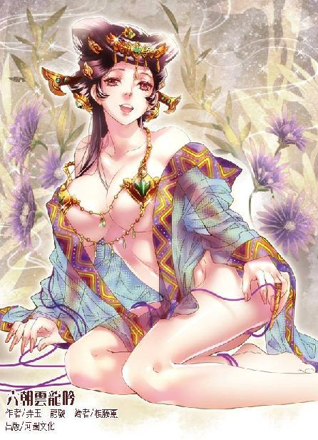

第53集·鬻爵得官
汉国篇（5/28）
出版日期：2014-06-26
【本集内容简介】
丹青师便是赫赫有名的毛延寿，当日在脚店发生的事情也被他如实画在绘卷上，卢景和斯明信这样的猛人看了内容都深感震惊，但连环谋杀案的真相尚未浮现……
原本要潜入太后寝宫拿回摄影机，程宗扬却阴错阳差地进入襄城君的府邸。这时小紫封印的琥珀发出高热，让程宗扬惊骇不已，难道苏妲己这个妖妇就在襄城君府中？祸不单行的是，高智商失手一刀捅死了郭解的外甥！程氏商会在汉国的处境将发生转变……
※ ※ ※ ※ ※

封面人物：董媛
高智商嘻皮笑脸，没有半点正经的样子进了酒肆，小胡姬翘起唇角，流露出三分娇嗔的薄怒，却有七分的欢喜，蓝汪汪的眼眸就像海水一样。
高智商飞快地凑上去，在她白玉般的耳后亲了一口。胡姬俏脸飞红，恨恨踩了他一脚，低嗔道：“要死啊！爹爹还在后面……”说到后面，声音微不可闻。
高智商把一支簪子纳入她袖中，亲热地小声道：“老婆，这是给你的。”
胡姬白了他一眼，托着木盘走开。
“老冯呢？”高智商追在后面问：“来了没有？”
胡姬头也不回地说道：“东厢。”
“我先去办事，一会儿找你玩啊。”
“走开啦。”
看着两个小儿女打情骂俏，程宗扬面无表情地揉了揉鼻子。瘦下来之前，高智商这小兔崽子一身的痴肥，活活就是个肉球的模样。到了哈迷蚩手里，老兽人不知道用了什么虎狼药，直接把小兔崽子从肉球泻成麻杆，那模样比原来更惨，原本一张圆脸变得干瘦，原来的小眯缝眼没有变大，反而又细又长，里面一对眼珠子滴溜溜乱转，透着十二分的小坏蛋模样，真不知道那个叫伊墨云的胡姬怎么会看中这小兔崽子的。
在程宗扬看来，高智商和这小胡姬倒是挺般配的，年纪相差不多，性子也有些投缘，真要成一对也不错。不过这事高智商比自己可现实多了，玩归玩，压根就没想过纳小胡姬过门的事。作为宋国掌权太尉的衙内，高智商就是纳一个酒肆女为妾，只怕还要引来非议，何况伊墨云还是个来自汉国的异族胡姬。
这事本来跟自己无关，让小兔崽子自己烦心就行了。可高智商的态度是吃光喝净，嘴一抹就跑——考虑到自己作为高智商名义上的师父，让这小兔崽子树立正确的道德观念，恐怕还真是自己的责任。
自从来到汉国，头痛的事实在太多了，也不在乎这一件。程宗扬收拾心情，带着高智商来到东厢。
冯子都一手支着下巴，跷着二郎腿，侧着身懒洋洋躺在席上，右手拿着三枚骰子，正一把一把掷着。听到声音，他抬起头看了一眼，顿时喜上眉梢，“老甄！过来过来！瞧瞧我这骰子怎么样？”
高智商接过来掂了掂，“象牙的？”接着惊叫起来，“不对！这骰子是混银砂的！”
冯子都抚掌笑道：“就知道你识货！换作旁人，一万个里面也未必有一个能认出来。”
高智商立刻来了精神，“哪儿来的？混银砂可不好弄。据说用混银砂做成的骰子能养灵，炼上一年半年，能与主人心意相通，十掷九中。这一粒没有几十万钱拿不下来。”
冯子都不以为然地说道：“能养灵的骰子有的是，有什么值钱的？”
“这你就不懂了。”高智商道：“别的骰子一眼便能瞧出来。养好的混银砂看起来跟象牙一般无二，轻易辨不出来。只不过这东西想养好太费钱，平常人根本养不起。”
冯子都嘿嘿一笑，“甄厚道是假名吧？能认识混银砂的，非富即贵，在咱们汉国也是数得上的人家——姓甄的，我怎么没打听出来呢？”
高智商脱掉鞋子，往席上一坐，大大咧咧地说道：“有什么好打听的？有这闲心，你干点正事不行？”
冯子都拉长声音，“行。你不肯说，我也不勉强，知道你有苦衷——”他拍了拍高智商的肩膀，露出一副了然于胸的表情，用抱怨的口气说道：“就你们武将世家规矩多。”
看着高智商愕然的神情，冯子都低声笑道：“你那腰牌是霍大将军亲手颁下去的，以为我不知道？既然走的霍大将军的门路，咱们就是一家人。再说你那几个伴当，能瞒得过别人，还能瞒得过我？怕走漏了风声，竟然从宋国请来禁军，哎哟，你家老爷子面子够大啊。”冯子都拍着胸膛道：“放心，哥哥心里有数，绝不往外乱说。有人乱打听，哥哥替你挡着！”
这都哪儿跟哪儿啊？程宗扬好不容易才听明白，冯子都是把高智商当成了汉国武将世家的子弟，以为家中的长辈是为了磨砺这小子，才把他改换姓名扔到军中。冯子都一副“我都懂得”的表情，还很仗义地表示，会替高智商掩饰身份。
既然冯子都这么明白了，高智商也不多说什么，直接道：“老冯，有件事得麻烦你。”
冯子都爽快地说道：“说！”
“先瞧瞧这个。”高智商说着，拿出一只精雕细刻的漆盒放在几上。
冯子都露出几分好奇，“什么东西？”
高智商打开漆盒，小心揭开半边锦缎，露出里面一只晶光闪闪的物体。
冯子都眼睛一亮，叫道：“这是……水晶杯？”
那两只杯子是程宗扬从太泉古阵带出来的，款式就是后世最普通的透明塑料杯，除了制作的精度更细致一些，其他没有半分出奇。但在六朝，这样的透明塑料杯绝对是稀世奇珍。
冯子都惊叹连连，“这么纯净的蓝水晶可不多见……瞧这手艺！神了！一点瑕疵都没有！巧夺天工啊！”
高智商全揭开锦缎，冯子都整个人都趴在几上，惊叫道：“我没看错吧！这世上还有粉色的水晶！”
两只杯子，一只天蓝，一只粉红，静静躺在漆匣里。透明的杯体映出锦绣华丽的色彩，光泽流淌，除了程宗扬，落在谁眼里都是四个字：绝世珍宝！
高智商把杯子取出来，并排放在漆几上。冯子都瞪着眼，脑袋围着漆几转了一圈，然后谨慎地开口，“有点像泰西进贡的琉璃杯，不过宫里的琉璃杯可没这么剔透……这么薄，能用吗？”
冯子都忽然瞪大眼睛，“哎哟老天爷啊！”
冯子都一声惨叫，却是高智商不小心碰到杯子，那只粉红的杯子跌落下来。冯子都心脏险些跳出喉咙，一脸的惊恐，生怕这只难得一见的绝世珍宝就在自己面前摔得粉碎。
谁知那只琉璃杯在席上一弹，打了个转，然后撞在几侧，毫发无损。
高智商抚掌大笑，“这下可唬到你了！哈哈，这叫软晶玉，世间仅此一对！老冯，没见过吧！”
冯子都脸色由青转白，一手捂着胸口，半晌长长呼了口气，“你小子可真不厚道，吓死我了……我瞧瞧！我瞧瞧！”
冯子都捧着杯子左看右看，又对着光线看自己的影子，不停地啧啧称奇。
高智商信口开河，吹嘘道：“软晶玉世间仅此一对，蓝者为雄，粉者为雌。无论寒冬酷暑，杯身都温润如玉，以此杯饮酒，能益寿延年。”
冯子都赞道：“果然是宝物！我冯子都今天算是开眼了！”
“冯兄是霍大将军的心腹，什么样的宝物没见过？我师父说，冯兄是当世俊彦，一般礼物你也看不上眼，也就这对杯子能拿得出手。”
“什么？”冯子都惊叫道：“给我的？太贵重了！”
高智商一脸随意地说道：“咱们兄弟有什么好客气的？拿着吧。”
“不行！不行！实在太贵重了。”
程宗扬笑道：“小徒与冯兄相识一场，一点薄礼，冯兄何必推辞？”
“这位是……”
高智商道：“我师父，程家少主。”
“游冶台的东家？”冯子都拍案道：“怪不得有如此手笔！程少主的大名，我可是久仰得很了！”
高智商把杯子收好，三人重新落座。
“我师父想找个机会给汉国朝廷效力，”高智商挤了挤眼，“明白了吧？”
“入朝？”冯子都犹豫了一下，然后露出一丝苦笑，“自家兄弟，我跟你实话实说：你要早两个月找我，高的不敢说，四百石以下的官职，一句话的事。就是二千石，只要肯花钱，咱也有门路。”
程宗扬道：“现在有什么为难的？”
冯子都长叹一声，“太后还政了。如今朝廷的官职，都是天子作主。霍大将军为了避嫌，称病在家。好多事我也不方便插手。”
高智商给众人斟上酒，然后道：“我师父不在乎那点俸禄，只是有个官身，办起事来方便些。”
冯子都仔细想了一会儿，“程少主是做生意的？”
程宗扬道：“家里倒是有些生意。”
“商人的话，更不好办了。”冯子都道：“若是军职，我倒有点门路。但商贾在七科谪之列，一旦从军只能发送到边疆。想留在宫中，除非是良家子。”
良家子是家世清白的平民，在汉国，商贾和百工、医巫一样，都在良家子的范畴之外。程宗扬对此也早有耳闻，说道：“程某本非汉国人氏，不知汉国是否有客卿？”
冯子都道：“有。但大多是虚职，没什么用处。”
“能上朝吗？”
“当然不行。除非天子特诏。”
程宗扬大为失望，他原本准备花钱找找门路，弄个客卿的身份，好接近汉国朝廷。如果连上朝都不行，这样的身份也没什么用了。
冯子都犹豫良久，又看了看那只装着软晶玉杯的木盒，最后心一横，起身往外张望了一下，关上门，然后回来坐下，压低声音道：“如果说门路，也不是没有……”
“冯兄尽说无妨。”
冯子都声音又低了一分，“千万别往外传，更不能提是我说的——”
程宗扬会意地点点头。
冯子都用只能让两人听见的声音道：“南宫西侧，有处官邸，叫西邸……里面管事的姓徐。爵位最高关内侯，金印紫绶，可世袭，五百万钱；武职虎贲、羽林的郎将，一千万钱；官职二千石二千万钱，四百石四百万钱。”
冯子都声音虽轻，程宗扬却听得惊心动魄，他话中的意思，那处西邸不仅爵位可卖，还有文武的官职出售。自己也是做生意的，但还从未想过生意能做到这一步。
汉国爵位以王爵最高，但非刘不王，一般人所能得到的最高爵位就是列侯，可以实际领有封地，自置僚属。关内侯仅次于列侯，但没有实封。虎贲郎和羽林郎属于天子禁军的中级军官，多由贵族子弟担任。二千石相当于一郡太守，作价二千万钱，就是一万金铢。
程宗扬道：“二千石，是实职吗？”
“实职还需要再花点钱。而且只能做一任。”
汉国官员一任多是三年，一万金铢当三年的太守，即使再加一些，这个价钱也比自己想象中要便宜得多。
程宗扬刚要开口，房门轻轻一响，小胡姬伊墨云捧着烩好的鲤鱼进来。她俏脸板得紧紧的，但低头时程宗扬发现她头上换了支簪子，正是高智商送给她的那支。高智商手上没多少钱，簪子也不是什么上等货，但她显然十分喜欢，此时戴在头上，平添了几分娇俏。
小胡姬上菜时，高智商一个劲儿和她眉来眼去，被程宗扬狠瞪一眼才老实了一些。
等小胡姬离开，冯子都又叮嘱道：“千万别走漏风声，别说是我透的信儿。”
冯子都如此小心谨慎，反复叮嘱，高智商不禁笑道：“冯哥，那个姓徐的是谁？你给我透个底，我心里好有点数。”
“千万！千万！别往外说，尤其别告诉你家老爷子。”冯子都小声道：“咱们兄弟，告诉你们无妨：徐璜是天子最亲信的内臣——明白了吗？”
程宗扬心头顿时恍然，太后已经还政，除了天子谁还能卖官鬻爵？这个所谓的西邸，其实是天子暗中卖官敛财的渠道。可天子君临汉国，又是六朝名义上的共主，富有天下，他干嘛要去敛财？
高智商毫不忌讳，开口道：“别逗了冯哥，要是天子的意思，何必这么鬼鬼祟祟的？反正是做生意，这么小心能挣着钱吗？”
“你个憨货。那是防着太后和霍大将军。”
高智商恍然大悟，“哎哟冯哥，这事你都知道了，是不是犯了忌讳？”
冯子都没好气地说道：“这不废话！要不是你，我能说吗？这辈子我都烂到肚子里，打死都不往外说。”
天子背着太后和霍大将军开设西邸，卖官敛财，却偏偏被霍大将军的心腹知道得一清二楚。想想就知道这漟浑水有多深。程宗扬得到自己想要的信息，心里略一犹豫，然后起身拱手道：“多谢冯兄。你们慢慢聊，我先告辞。”
冯子都有些意外地站起身，高智商拉住他，“我师父还有点事。咱们兄弟今天好好乐乐！对了，这里还有点小玩意儿。”
高智商说着拿出一只精巧的皮夹，里面装着一张竹制漆金的名刺，还有一叠印制精美，带着古怪花押的纸笺。
冯子都来了兴趣，“什么东西？”
“程氏商会的贵宾卡。冯哥带着这张卡，只要是程氏商会名下的酒楼馆阁，一律是贵宾待遇。”
“游冶台也行？”
“当然。拿着这卡，你想叫谁陪都行，保证让你满意！”
冯子都大喜过望，“好兄弟！”
“这些纸钞你也收好，”高智商笑嘻嘻道：“比贵宾卡可值钱得多。”
“是吗？”冯子都将信将疑。
“冯哥什么时候用钱，拿着纸钞到程氏商会名下的产业，”高智商低声道：“一张可以兑换十万钱。”
冯子都吃了一惊，一张十万钱，这一叠不下十张，就是上百万钱，那位程少主果然是大手笔。
“好兄弟！”冯子都慷慨地说道：“你这份心意我领了，往后你的事就是我的事！”
“往后少不了麻烦你的时候。来，干一杯！”
※ ※ ※ ※ ※
程宗扬确实是有事，离开酒肆，他立即赶往金市附近自己租住的那处房屋。一名文士正在房内，看到程宗扬进来，文士连忙起身施礼，“程公子。”
程宗扬不动声色地回了一礼，“先生请坐。”
罂粟女轻笑道：“毛先生可是难得的丹青圣手呢。”
文士连声道：“不敢，不敢。”
双方颇为客气地分宾主坐下，接着有人奉上茶汤，程宗扬一看，奉茶的居然是延香，不由怔了一下。延香怯生生地低声道：“请主子慢用……”
程宗扬瞥了罂粟女一眼，罂粟女避开他的目光，唇角露出一丝笑意，然后微微侧身，轻不可闻地在程宗扬耳旁低语道：“若不是有客人，便让她用心给主子奉茶了……”
程宗扬没好气地瞪了她一眼，然后收敛心神，打量着面前那名文士。
那文士穿着一袭青衫，面容清癯，颌下留着长须，虽然双目狭长，但颇具神采，此时坐在他面前，面上隐约带着几分谄笑。
一个时辰之前，自己在路上遇到这名文士被一群奴仆追打，出面拦了下来。一问之下才知道他原来是一名丹青师，刚来到洛都不久，因为求见襄邑侯，不料却误入襄城君门内，被奴仆赶了出来。
程宗扬听到是丹青师便留了心，何况又与襄邑侯有关，但因为当时已经与冯子都约好见面，无法爽约，于是让在暗处随行的罂粟女出面，把他请到自己的住处，暂时先安置下来。
那丹青师身无分文，在洛都已经走投无路，一听有人相邀，当即欣然应诺。此时他已经洗去鼻上的血迹，拂去身上的尘土，看起来总算不再那么狼狈。
程宗扬道：“方才听小婢提及，先生姓毛，不知尊驾大名？”
文士道：“敝人毛延寿，以丹青为业。”
程宗扬觉得这名字有点耳熟，顺口道：“原来是毛先生……等等！你是毛延寿！”
毛延寿一脸茫然，不知道这位公子为何露出一副古怪的表情，两眼直勾勾盯着自己。他小心道：“公子可是在哪里听说过区区的薄名？”
当然听说过！
“意态由来画不成，当时枉杀毛延寿”——这是一个改变了史上四大美女之一王昭君命运的名字，虽然是一个丑陋的配角。
程宗扬很想问问他见过王昭君没有？话到嘴边又咽了回去。他打了个哈哈，“毛先生擅画美女，天下知名，程某闻名已久。今天一见，实在是幸会！”
毛延寿忙道：“贱名不敢有辱清听。”
“先生过谦了。”程宗扬诚心诚意地说道：“以先生的才艺，便是入宫为御前画师，也不在话下。”
这家伙虽然声名够臭，但画艺堪称圣手，即便被砍了脑袋，当时仍被推为第一。
毛延寿此时画艺初成，不过是籍籍无名之辈，听到程宗扬如此称许，不禁又惊又喜，连忙道：“不敢不敢。”
两人客套几句，程宗扬道：“莫怪程某唐突，不知先生为何前往襄邑侯府，以至于受辱于小人呢？”
毛延寿道：“公子相询，区区不敢隐瞒。区区在外游历多年，刚回洛都不过数日，谁知遇到扒手，将区区盘缠席卷一空。无奈之下，只好奔走权贵之门。”他苦笑道：“名为投效，实为乞食。”
“先生可是与襄邑侯有旧？”
“不过是一面之缘。”
“在路上时，程某见到先生带着画轴，想来是登门献画，不知程某能不能先睹为快？”
毛延寿露出一丝尴尬，“劣作而已，不敢有污公子眼目。”
程宗扬笑眯眯看着他，忽然道：“八月初九，先生是在上汤吧？”
毛延寿脸色微变，支吾道：“这个……区区……在下记不太清了。”
程宗扬心下雪亮，于是不再兜圈子，随即吩咐一声，让罂奴拿出一幅画卷，在几上摊开，说道：“此画想必是先生的手笔吧？”
毛延寿一眼看去，不由失声道：“此画何以在公子手里？”
“先生多半还不知晓，此女数日前便已惨死。”
“啊！”毛延寿大吃一惊。
程宗扬淡淡道：“不仅是此女。那位贩朱砂的商人也已身首异处。”
毛延寿目瞪口呆。
“当日在脚店落宿的住客，如果加上先生的话，一共是十二人。其中有位书生，先生多半还记得，八月十四夜间死于书院火中；独眼的拳师，八月十五日在石崤遇匪被杀；偷走先生财物的扒手，八月十日死于上汤；三名脚夫，八月十六日在伊阙溺水而亡；这女子名叫延玉，与那名商人在偃师的客栈被杀。”
毛延寿脸色剧变，“他们……他们……怎……怎么可能……”
程宗扬叹了口气，“先生若是不露面也就罢了，谁知先生会自投罗网。如今在襄邑侯府奴仆面前露出行藏，想再独善其身，只怕不易。”
毛延寿神情呆滞，额头冒出黄豆大的汗滴。
程宗扬抬眼盯着他，慢慢道：“初九那天，上汤长兴脚店里面，到底发生了什么事？”
毛延寿张了张嘴，舌头却像打结一样，一个字都说不出来。
程宗扬拿出一只荷包，“哗”的一声，将里面的钱铢倒在几上。金灿灿的钱铢满几乱滚，有几枚掉在毛延寿膝前。
“只要你说出来，这些钱铢都是你的。”
毛延寿脸色由青转白，忽然间福至心灵，他扑到程宗扬面前，用变调的声音道：“这些钱铢小人不敢拿！只求公子救小人一命！”
程宗扬道：“你倒是明白，眼下能保住你性命的，也就是程某了。这样吧，我程氏商会还缺一个丹青师，你便投入我门下。这些钱就当你的安家费，往后每月两千钱。如何？”
毛延寿颤声道：“多谢公子……多谢公子……”
程宗扬笑道：“还叫我公子吗？”
“家主！”
“很好。”程宗扬道：“收起来吧。”
毛延寿抹了抹额上的冷汗，一枚一枚捡起散落的金铢。也许是那些金铢握在手中，让他有了底气，脸上的忧惧之色渐渐褪去，露出几分惊喜。
江山易改，秉性难移。程宗扬心下暗叹，这位毛延寿当年就是因为贪财，连史上四大美女之一的王昭君都敢往丑里画，结果让天子错失绝色，大怒之下将他斩首弃市。这一世也是如此。对付这家伙，还是要用钱啊。
等毛延寿捡完钱铢，脸上露出喜意，程宗扬道：“八月初九，在上汤长兴脚店的那位贵人，究竟是谁？”
毛延寿不再隐瞒，当即道：“是襄邑侯。”
程宗扬心下疑云大起。那个姓唐的中年人分明是颍阳侯吕不疑门下。如果当时在上汤的是吕冀，为何吕不疑要杀人灭口？
“襄邑侯出行，数百随从前呼后拥，怎么会进入一间脚店？”
毛延寿小心道：“此事在下也觉得奇怪。”
以襄邑侯的威势，根本没有道理会去一间低档的脚店，除非……他要见的某个人在脚店里面。
“当天在脚店里的人，你还记得吗？”
毛延寿道：“小的学画多年，先练的便是眼力，不敢说巨细无遗，一般的人物景色多少都能过目不忘。”
程宗扬感觉就像天上掉下来个金元宝一样喜出望外，连忙道：“都有谁？”
毛延寿赔笑道：“正好小的将当日情形都画了下来，家主一看便知。”
自己刚才那把金铢花得实在太值了！程宗扬赶紧道：“在哪里？”
“正是此画。”
毛延寿拿出自己随身携带的画轴，解开外面包裹的薄毡，将画轴放在几上。
※ ※ ※ ※ ※
画卷是用一幅白色的长帛制成，看得出毛延寿为此画下了不少本钱，选的丝帛极为精细——他想用这幅画投效襄邑侯，自然要精益求精。
谜底揭开就在眼前，程宗扬不由自主地屏住呼吸，看着毛延寿一点一点摊开画卷。
画卷上首先出现的是一名书生，他背着一只木桶，桶上放着几张琴，一副风尘仆仆的样子，正举足踏进脚店。比起毛延寿在脚店给延玉画的肖像，这幅画卷笔法更加精细，画上的人物栩栩如生。
毛延寿道：“这名书生入店最晚，听他说，是书院的学子。”
程宗扬默默看着画卷。第一个人：云台书院，郁奉文。
接下来是一名独眼的壮汉，他光着上身坐在门侧，身边放着一只水桶，正在磨洗一柄长刀。虽然那壮汉长相狰狞，但在画中笑容可掬。
毛延寿道：“此人是一名拳师，正要返乡成亲，因此面带喜色。”
第二个人：城南武馆，杜怀。
壮汉旁边的台阶上，一名瞽目老者佝偻着身体，一手抱着胡琴，一手拿着竹杖，正摸索着走下台阶。
“这是名胡人，与我等言语不通。”毛延寿道：“虽然目不视物，耳朵却灵光，只要叫一声，给他一枚铜铢，他就会拉一段曲子。”
程宗扬点了点头。第三个人：金市的拉胡琴盲眼老人。
接着是脚店院中的情景，细节与自己当日和卢景看到的火场废墟一一印证，无不相合。能看得出脚店院子并不甚大，一侧是牲口棚，一侧是简陋的通铺，正对着院门的是两间上房。
毛延寿见他看得仔细，有些讪讪地赔笑道：“小的善画人物，于景物不甚擅长，让家主见笑了。”
程宗扬道：“不错了。”
画中建筑的透视结构略有瑕疵，但一石一瓦都极为用心，也没有什么好挑剔的。
说着程宗扬忽然目光一跳，画上出现了两个自己没有见过的人物。他们捧着陶碗，正仰着头，大口大口地喝水。
程宗扬没有作声，只盯着徐徐展开的画卷。紧接着的第三个人物是个身材瘦削结实的汉子，两腮满是虬曲的胡须，正是当日见过的石蛮子。三人同在一处，旁边的墙上搁着扁担，脚边放着几只大筐。里面放着几只包裹严密的袋子，还有一堆做好的漆器。
毛延寿指点道：“这是三名脚夫……”
第四个人：石蛮子。第五、第六两人是自己还没有见过，就在伊阙溺死的牛老四和牛老七兄弟。
毛延寿继续道：“是这位陈少掌柜请来的。”
画面上一个小白脸正笑嘻嘻说着什么，面容正是偃师客栈中被砍掉首级的年轻商人。在他对面是一个梳着高髻的娇俏少女，正掩着口，笑得花枝招展。
延香在旁边看到，眼圈顿时一红。显然认出了画中人的身份。
程宗扬心里默默记着数，第七个人：陈凤；第八个人：延玉。
“这两位住在上房。那幅画就是当时陈少掌柜请在下画的。”
程宗扬忽然指着院中一个正在打扫的老人，“这人是谁？”
“是脚店的东家，”毛延寿一边展开画卷，一边指点道：“这几个是店里的人。夫妻两个带了一对儿女，还有一名打杂的老汉。”
程宗扬细细看过，并没有发现什么异样。如果说襄邑侯吕冀此行的目标并非住客，而是这户开脚店为生的人家，实在没有道理。
接下来的画面让程宗扬不由自主地皱起眉头，画上紧挨着牲口棚的位置是一道木栅，里面圈着几头黑乎乎的肥猪，让他本能地想起当初搜索灰烬时，闻到的那股呛人恶臭。
木栅旁边是一处用草席围起的露天空间，一名汉子正鬼鬼祟祟躲在里面，只露出一只脑袋往外张望。
毛延寿口气中多了几分痛恨，“正是这贼子！在下一眼便看出这贼子不是好人，谁知半夜趁在下不备，偷了在下的盘缠！”
第九个人：扒手赛卢。
程宗扬看了延香一眼，延香匆忙避开目光。
程宗扬忽然笑出声来，“这通铺不错啊。”
画中诸人姿态各异，都巧妙地抓住人物动作的一瞬，虽然是静止的画面，却令观者如见其人，如闻其声。但接下来能看到一个男子在室内正襟危坐，面前的案几上铺着绢帛，正神情自若地挥毫泼墨。几上陈列着笔、砚、颜料，还放着一只香炉，喷吐着瑞香，宛如神仙中人。显然轮到自己时，毛延寿很卖力气地把自己大大地美化了一番。
毛延寿讪笑两声，“陈少掌柜给了在下五枚银铢，让在下替那位姑娘画幅小像。这便是那日在下作画的情形。”
第十个人：毛延寿。
程宗扬道：“还有两个人呢？”
“那两位没怎么出门。因此在下把他们画在室内。”
画卷中的上房正对着郁奉文进入的大门，展开到此处，已经到了脚店最后的位置。画中两人正相对弈棋，一个是留着长胡的老者，另一个是面上带着疤痕的少年。
对这两个始终没有找到的当事人，程宗扬看得极为细致。那少年十五六岁年纪，面上一块巴掌大的青色疤痕，从左眉一直延伸到眼下，让人一眼望去就不想多看。他对面的老者眉头微微皱起，似乎带着几分忧色。程宗扬心头微微一动，虽然老者头上包着苍黑色的头巾，但给自己的感觉绝不是一般的奴仆。如果这不是毛延寿作画时加以演绎，而是捕捉到人物神态的一瞬间，如实画了下来，这对主仆就十分耐人寻味了。
难道他才是襄邑侯要找的人？那位身怀重宝消失无踪的严君平？
十二名客人，五名开店的主奴，当日在长兴脚店的所有十七个人物已经全部出现在画中。但那幅画轴却只展开了不到三分之一，卷在轴上的绢帛还有厚厚一卷。
程宗扬不禁诧异，“后面还有吗？”
毛延寿赔笑道：“前面这些只是引子，小人给襄邑侯献画，当然不会只画这些不相干的闲人。”
程宗扬精神一振，“后面是襄邑侯？”
毛延寿对自己的画技显然信心十足，说道：“家主请看。”
帛画是采用长卷的画法形式，接下来是一队车马从脚店外路过，虽然比起自己在北邙见到的襄邑侯队伍人数少得多，但全是车马，没有步行的随从。数十名骑手前后簇拥着两乘马车，一个个马如龙、人如虎，不知是毛延寿画法的缘故，还是因为自己见过襄邑侯门下的死士，那些骑手杀气腾腾，透出一股凶态，似乎从画面上跃然而出。
接着马车在脚店旁停下，车帘卷起，露出一个披发的肥胖男子，正是自己在北邙见过的那位襄邑侯吕冀！
程宗扬仔细看着画卷，心下暗暗佩服，这个毛延寿的画技比自己想象的还要精妙，区区几笔，便将襄邑侯飞扬跋扈的姿态勾勒得鲜活无比。
车旁一个留着两撇美须的男子，程宗扬还记得在北邙见过，名字叫秦宫，是襄邑侯的心腹。他正躬身对吕冀说着什么，吕冀靠在车窗边，面带傲然之色。
画上一群扈从涌入脚店，接着马车驰进院中，其余的骑手分散在道路两边的林中，藏好身形。店中从店主到住客，所有人都被带出来，在檐下跪成一排。
“这是怎么回事？”
“小人也不知道。”毛延寿道：“当晚一群人闯入店中，说襄邑侯光临，让店内人都出来跪迎。还有人到房中搜查是否藏有奸细。”
程宗扬在画上看到几名汉子戴着熟悉的铁面具，显然是襄邑侯门下的死士。这些人作为襄邑侯的贴身扈卫，有时被派去暗杀对手，甚至充当卧底，因此在吕冀身边也极少以真面目示人。
程宗扬正往下看，毛延寿却停住手，尴尬地低声道：“还请家主让旁人回避一下……”
程宗扬心下不解，但还是吩咐道：“你们先退下。”
罂粟女和延香闻言退下，毛延寿这才继续展开画卷。画上吕冀被一群美姬扶着走下马车。那些美姬一个个风姿秾艳，在毛延寿笔下流露出诱人的姿态，给画卷增添了几分亮丽的色彩。
程宗扬的目光却被吕冀脚下的画面吸引，良久才抬起头看着毛延寿。
毛延寿窘迫地咳了一声，“当日情形便是如此，小人不敢妄画……”
吕冀脚下伏着一具曼妙的女体，那女子头上戴着一只古怪的皮套，看不到面容，颈中套着一条铁链，被一名戴面具的死士拉着，四肢着地跪在车旁，用身体充当吕冀的下马石。她玉体一丝不挂，腰肢被吕冀踩得弯曲下去，浑圆的臀部向后翘起，臀间插着一束七彩的孔雀翎。
程宗扬继续往下看去。随从搬来锦榻，襄邑侯吕冀靠在榻上，面前又多了一名女子。那女子同样戴着面具，只是身上多了一幅轻纱，白腻的胴体在纱内显露无余。在她面前，一名死士伸手撩开轻纱，手掌伸到她腿间，当着襄邑侯的面玩弄她的秘处。另一名女子伏在榻边，那只插着孔雀翎的雪臀对着锦榻。吕冀仰天大笑，似乎欢喜非常。
虽然只是在绢帛上描绘的画作，但在毛延寿笔下，人物冲击力十足，简直有种看大片的感觉。程宗扬道：“吕冀在做什么？”
“那晚的事，小人现在想起来还跟做梦一样……”毛延寿小心翼翼地说道：“襄邑侯在院中坐定，扈从就关上脚店的大门，张起灯笼。襄邑侯像是心情很好，命人带出这名女子，让店内的人都来看这女子的身体如何。”
“看起来不错。”
毛延寿道：“不瞒家主，小人擅画人物，见过的美女车载斗量，可这两名女子的美态，实在是小人生平仅见。虽然未见面容，但一肌一肤无不尽态极妍。”
“她们是谁？”
“小人听到旁人骂她们贱婢，多半是府中的私妓。这两女不知为何触犯了主人，被带到此地让人羞辱。”
“是吗？”
毛延寿干笑道：“家主再看便知。”
接下来的画面毛延寿使出浑身解数，画得活灵活现。两名绝色私妓被戴着铁面具的死士牵着，逐一在众人面前展露羞处。跪在檐下的书生、拳师、脚夫、商人、扒手……表情或是呆滞，或是吃惊，或是兴奋，一个个神态各异。
虽然看不到两女的表情，但从她们的身体姿态，能看出两女已经被人调教得驯服无比。周围无论贫富贵贱，都衣冠楚楚，只有她们身无寸缕地任人观赏。襄邑侯身边的美姬还笑着往她们臀间啐唾，尽情羞辱两女。
程宗扬忽然指着画上的襄邑侯道：“他说了什么？”
毛延寿怔了一下，然后道：“襄邑侯好像在等什么人，那人一直没来。襄邑侯有些生气，冷笑着说了一句‘野鸡也想变凤凰？便是真当了凤凰，也不过是我吕家的贱奴！’然后便……”毛延寿吞吞吐吐地说道：“然后便吩咐，拿那两名私妓宴客……”
程宗扬往下看去，画面变成了一连串的春宫图。两女就在简陋的小院内玉体横陈，当着一众男女的面，与人轮流交合。拳师、三名脚夫、商人、扒手、跑堂的小二……一文钱都不用花，便白白享用了她们的肉体。
即使透过画卷，程宗扬似乎仍能感受到两女诱人的美色。画中包括孙老头主仆在内，一共十七个人，在美色的诱惑下，几乎都像疯魔了一样。程宗扬注意到，没有参与的只有瞽目的胡琴老人，店中那名年幼的小婢和延玉，连店内的老妇也在美姬的诱使下，去摸弄两名私妓柔滑的肉体。
毛延寿又一次停下手，赔笑道：“后面就不用看了吧？”
程宗扬没有作声，直接拿过卷轴，自己摊开。
画上出现了一只木桶，有半人高，被一名戴着铁面具的死士从车上搬来，横放在襄邑侯脚边。
毛延寿畏惧地瞟了家主一眼，小声解释道：“襄邑侯一直没等到人，发了脾气，把那个姓秦的监奴狠骂了一通。监奴赔着笑让人搬来木桶……下面真不用看了……”
程宗扬面无表情地往下看去，眉头顿时狠狠跳了两下。
襄邑侯转怒为喜，抬脚一蹬，木桶一路滚了出去。箍桶的草绳却是松的，被那名死士踩住。木桶滚出数丈，草绳已经放到尽头。店内的老妇打开木栅，木桶撞进溷厕旁的豚栏内，没有用胶粘过的桶身立刻散开，从里面滚出一段肉体。
程宗扬脸色变得极为难看。那具肉体只有短短一截，双手双腿都无影无踪，仅剩下一段光溜溜的躯干。与两名私妓不同，那女子没有戴面具，只紧紧闭着眼睛。虽然身体残缺，年纪也非少女，一张面孔仍然千娇百媚，被毛延寿勾勒得栩栩如生，竟然是难得的绝色。
溷厕内被几头黑猪践踏得遍地泥泞，那截雪白的肉段从桶中滚出，就像一块美玉掉入泥中。混着污水、猪尿、粪便的泥浆沾在那具女体上，变得肮脏无比。
襄邑侯披头散发地走到栅栏边，一边观看，一边大笑。那女子闭着眼睛，嘴巴痛楚地张开，光洁的肉体上沾满污物，被几头黑猪挤在中间，在泥浆里挣扎蠕动。
程宗扬冷冷道：“她眼睛睁不开吗？”
毛延寿小声道：“是。”
“舌头呢？”
“小人不知……”
程宗扬盯着画面上仅余躯干的女子，心头翻翻滚滚，像是掀起惊涛骇浪，半晌他才吐出两个字：“人彘！”
程宗扬没有再往后看，直接把画轴卷起，负手起身，望着白粉涂过的墙壁，平复自己的心情。自从听说汉国的太后姓吕讳雉，他就立即联想起那位被她炮制成人彘的戚夫人。吕雉对付情敌的手段，可以说是古今第一酷毒，即使隔了两千年，仍让人不寒而栗。没想到换到六朝的时空，仍然有这样的惨剧。而且这个沦为人彘的女子如今还活着，甚至自己有可能亲眼见到她。
看到那个身体残缺的女子，程宗扬已经明白当晚在上汤的脚店到底发生了什么事。如果自己没有猜错，那个人彘应该是太后吕雉的手笔，身份多半是前任天子的宠妃。襄邑侯肆无忌惮，竟然把她带到上汤的脚店，在一群身份各异的住客面前恣意凌辱。襄邑侯吕冀的跋扈嚣张尽人皆知，能做出这等事也不意外。
而吕不疑生性谨慎，得知此事，立即派出门下杀手，将脚店的孙老头一家尽数灭口。所以上汤的事情发生在八月初九，脚店失火却隔了一天。想必第二天吕不疑才得知胞兄的所作所为，设法弥补。但当天在脚店住宿的客人已经四散，此事涉及宫闱秘辛和吕氏的隐私，一旦泄漏就是一桩天大的丑闻。吕不疑纵然位尊权重，也不可能通过官府手段去追查线索，不得已才找到寓居洛都的阳泉暴氏，暗中查访，一路杀人灭口。
可笑的是毛延寿，虽然对自己当晚目睹的一幕了如指掌，却对事件背后的意味一无所知。他在脚店被赛卢窃走盘缠，走投无路之下，竟然想用此画来投襄邑侯所好，冀图攀龙附凤，却不知正是自寻死路。
程宗扬看着这位技艺超群，人品却不怎么样的丹青师，由衷说道：“你真幸运，居然投错了门。”
毛延寿听说当晚脚店中住客几乎都被灭口，才知道自己鬼迷心窍，行事太过孟浪，此时心下一阵阵后怕，勉强笑道：“若非家主，小人已经尸骨无存。还求家主庇佑小人……”
“先生便暂时住在此处。有事吩咐小婢便是。罂奴，小心服侍好毛先生。”
罂粟女娇滴滴应道：“是。”
程宗扬厌恶地看了眼画卷，准备让罂奴把此画封存起来，忽然间眉头一皱，猛地想起什么。
他连忙打开画卷，从头开始一寸一寸看过，片刻后他抬起头，“那个疤面少年和老仆呢？”
从两名私妓与众人交欢开始，那对主仆就从画卷中消失了。无论是院中淫欲横流的一幕，还是襄邑侯带人在溷厕旁大笑取乐，都没有出现那两人。
毛延寿道：“小人也在奇怪。这二人似乎是悄悄离开了。第二天我等离开脚店时，也未曾见到这两人。”
程宗扬道：“按你图上所示，脚店四周都是襄邑侯的人，他们两人怎么可能中途离开？”
毛延寿苦笑道：“这小人就不知道了。”他眼睛转了几下，“也许是跟着襄邑侯的车队一同离开……”
说着他声音低了下去，显然连自己也不相信。
程宗扬越想越觉得蹊跷，脚店中当日住宿的十二名客人，如今都陆续找到，只有这对主仆，当日住店的客人都知道他们存在，却至今没有找到丝毫有用的线索。除了当日在脚店住过以外，身份、来历、去向一无所知。
程宗扬这些天跟着卢景一路找人找到现在，最大的感受是：一个人只要生活在社会中，即使偶然路过，也会像飞鸿踏雪一样，或多或少地留下一些痕迹。如果找不到任何线索，只有一种可能：有人在故意隐藏。
那么，这对主仆究竟在隐瞒什么呢？
※ ※ ※ ※ ※
卢景和斯明信仔细看着画卷，毛延寿老实坐在一边。刚才被那个阴冷的汉子不经意地瞥了一眼，毛延寿浑身的血液都仿佛冻结了，这会儿连大气也不敢出。
当初看到延玉的小像，程宗扬和卢景只觉得画师笔法挺流畅，等见到画卷，不禁对毛延寿的画技刮目相看。他们见过的郁奉文、杜怀等人，在画卷上一个个栩栩如生，可见这个无良画师的观察力和技法非同一般。
程宗扬不禁感叹，如果先找到的是毛延寿，直接对着画卷找人就行了，哪里还用自己和卢五哥四处奔波？偏偏人都快找齐了，才偶然遇到毛延寿，白花了不少力气。
画卷一点一点打开，看到画上的人彘时，连卢景都变了脸色，唯有斯明信仍然面无表情，只是手指紧了一下。
良久，两人放下画卷。程宗扬指着画卷上的老仆道：“这个人四哥和五哥有印象吗？”
卢景摇了摇头，“没见过。”
“不知道是不是看得久了，我都觉得这人有点眼熟——”程宗扬还不死心，“四哥，这真的不是严君平吗？”
斯明信确定无疑地说道：“不是。”
“肯定不是。这个人我从来没有见过。”卢景扭头道：“你说吕冀像是在等人？”
毛延寿连忙道：“小人只是觉着吕侯爷像是在等人。”
“他还说了什么吗？”
“小人记不清了。”
“如果吕冀真是在等人，究竟在等谁呢？”
这个问题程宗扬也反复想过，但实在想不出以襄邑侯的身份，为何要在一家荒郊野外的低档脚店跟人见面，而且似乎还没有等到。
卢景道：“那几个女人若是宫里的，这位襄邑侯的胆子未免太大了。即便太后权倾朝野，一旦泄漏出去，也不好收场。”
程宗扬忽然道：“南宫还是北宫？”
众人齐齐向程宗扬看来。
“如果那几个女人是北宫的，这条帕子又是怎么回事？”程宗扬取出一条帕子，上面“玉堂前殿”四字清晰可辨。
“这条帕子毛先生见过吗？”
毛延寿脸都吓白了。他原以为那些女人无非是襄邑侯的姬妾，虽然荒唐，到底只是风流加下流而已。听家主一说，才知道此事涉及宫闱私密。那几个女人很可能是先帝的妃嫔，甚至有可能来自南宫，是当今天子的身边人。无论是哪种可能，自己这个知情人小命都已经死了九成。
“小人……小人……未……未曾见过。”
“仔细看看。”
毛延寿认真看了几眼，然后使劲摇了摇头。
见问不出什么，程宗扬对毛延寿道：“你先下去吧。”
毛延寿如蒙大赦，赶紧应道：“是。小人告退。”
等毛延寿离开，卢景道：“姓唐的又来催了一次。”
“五哥怎么说的？”
“我告诉他有一个似乎去了外郡，快则三日，慢则五日才有消息。”
程宗扬笑道：“不如把那个疤面少年和老仆告诉他，就说下落不明，让他也帮忙找找。”
卢景挑了挑眉头，“那可不成。砸我们阳泉暴氏的招牌。”
“五哥有什么主意？”
“假如两人是中途遁走，那老仆的修为不会太差。至少也是五级以上，这样的高手，在洛都也不会无籍籍名。”卢景道：“让姓毛的把他们两个的相貌单独画一张出来，我找人问问。”
“行。”程宗扬道：“五哥去找人打听这两人的身份，四哥呢？”
斯明信道：“入宫一趟。”
卢景笑道：“四哥这回失算了。你那件东西被他放在盒子里，跟吕不疑一起入宫，结果到现在还没拿出来。”
程宗扬吓了一跳，“不会让人发现吧？”那摄像机可是世间仅此一件，丢了根本没处买去。
“四哥在盒子上留了禁制，如果有人打开，这边就会发现。”
程宗扬道：“那得赶紧拿回来啊！”
斯明信起身道：“我去。”
“等会儿！四哥，你就这么闯进去？”
太后所在的北宫城墙高耸，宫内一天十二个时辰都有军士守卫，想神不知鬼不觉地潜进去，即使以斯明信的身手也非易事。
“放心吧。”卢景道：“老四下午在宫外转了一圈，倒是找了条路子。”
“有路子？”程宗扬眼睛一亮，“我也去啊！”
※ ※ ※ ※ ※
天色入暮，城中已经开始宵禁，大街上空无一人，只有路口守着几名士卒。一辆马车从巷中驶出，车上插一面程宗扬花重金买来的通行令旗。巡视宵禁的士卒验过令旗无误，随即挥手放行。
马车没有驶向宫城，而是向右一绕，驶入南北二宫之间的大道。洛都南宫与北宫之间相隔数里，中间错落着官署和苑林。马车沿大道行驶不久，一道巨大的拱桥出现在头顶。为了方便天子来往于两宫之间，也避免扰民过甚，南宫落成之后，天子便下诏兴建了这座连通两宫的复道。
南、北宫城均有四座同向同名的宫门。复道起自南宫中心的崇德殿，向北越过玄武门，进入北宫的朱雀门，直通北宫正中的德阳殿。整条复道宽及十丈，长达七里，外面看起来虽是一座长桥，里面却分为三层，中间是天子所行的御道，两侧的甬道供臣僚和侍者通行。
车辆从桥下驶过的刹那，两道身影从车中闪出，像壁虎一样贴在桥洞内侧。两座宫城戒备森严，即使能越过城墙，也难以避开守军的视线。这条复道的桥拱离地面高达六丈，桥上同样戒备森严，两侧每隔十步便有一名军士守卫。但落在斯明信这种大行家眼中，这条复道就是最大的破绽。
桥拱是用青石砌成，打磨光滑，又是内拱，根本无法攀缘。但斯明信下午在桥下走了一遭，轻易就找出几处虽不起眼，却可以借力的位置。
两人一前一后在光滑的石拱下攀缘，不多时就攀到桥廊下方。斯明信贴在廊柱上听了片刻，然后悄无声息地向上攀去，一直爬到廊桥上方的飞檐处，身体如狸猫般一翻，藏在檐下。
程宗扬小心屏住呼吸，沿着廊柱一点一点往上爬。在他左右各五步的位置，就分别有一名羽林天军的士卒，稍有动静，立刻就会被人发现。程宗扬好不容易爬到檐下，只见斯明信一手攀住檐角的瓦当，身子一纵，落在檐上。程宗扬有样学样，跟着他攀上飞檐。
在檐下藏好身形，程宗扬这才注意到廊桥上方的飞檐足有三重，单是檐身就高达两丈，飞檐离桥面还有一丈多高。这样的高度，即使偶尔弄出点动静，下面的士卒也未必会听见。
程宗扬大大地松了口气，向斯明信打了个手势，表示自己已经准备停当。斯明信点了点头，两人藏在一二层飞檐之间，一路无惊无险地穿过复道，来到北宫正中的德阳殿。
月夜下，宫禁一片寂静。望着脚下层层叠叠的宫殿、两旁林立的楼观、巨大的望阙和形态各异的神兽图案，程宗扬不由生出一种做梦的感觉——自己竟然就这么轻轻松松地来到汉国曾经的权力中心？这简直比买票参观还容易。当然他心里也明白，假如不是有这条复道，假如不是有斯明信这种大行家带路，自己也许连桥拱都爬不上去。
程宗扬还是第一次见识到汉宫内部，从檐下四处望去，只见大片大片的宫殿都被黑暗笼罩，似乎无人居住。偶尔有几处点着灯烛，也被重重帷幕遮挡，只隐约露出一丝灯光。
斯明信却如同识途老马，毫不犹豫地往北掠去。好在他速度并不快，还不时停下，避开宫内的守卫，自己才能跟上。
程宗扬低声道：“四哥，你以前来过？”
斯明信道：“禁制。”
程宗扬意下恍然，斯明信并不是知道宫里的路径，而是通过留下的禁制，感应到摄像机的位置。
偌大的宫禁寂无声息，让程宗扬不禁暗自纳闷，据说汉宫中仅侍女便不下万人，难道都在天子所居的南宫？这么大的宫殿空成这样，不知道的还以为这是废弃的冷宫呢。
两人时走时停，半个时辰之后，一座庞大的宫殿出现在视野中。整座宫殿建在一座两丈高的汉白玉台陛上，东西长达四十余丈，飞檐斗拱，气势恢弘。林立的巨柱漆成朱红色，上面雕刻着漆金的龙凤图案。宫门顶端的匾额上，写着三个一人多高的大字：永安宮。
程宗扬原本还担心会不会迷路，看到这座宫殿才放下心。自己虽然对汉宫不熟，也听说过这座太后的寝宫。两人从一座台阁后现出身形，接着眼角一跳，同时停住脚步。台陛下方，静悄悄立着两队侍从。队伍前端是两乘轻便的马车，车前的旗号分别是襄邑侯、颍阳侯。
程宗扬与斯明信对视一眼，都看出彼此的惊讶：吕冀和吕不疑上午便入宫拜见太后，竟然直到此时还没有离开，究竟是什么事能谈这么久？
※ ※ ※ ※ ※
斯明信四下略一张望，然后退了回去，绕到台阁另外一侧，闪身往宫殿西边的池苑掠去。
池苑紧邻着宫殿，碧绿的水波绕着汉白玉台陛，水面映着淡淡的月色。两人借着池旁的柳树小心藏匿身形，往永安宫潜去。忽然斯明信身形一凝，扭头往池中望去。
程宗扬也觉出异样，回头一看，险些惊叫出声。月光下，一团翠绿的叶子缓缓舒展开来，起初只有尺许大小一团，展开之后大如车盖，竟是一片径逾数丈的荷叶。可惜此时花期已过，只剩下残留的荷梗，荷梗顶端的莲蓬足有一人合抱。饶是程宗扬在南荒见惯了各种巨大的花卉植物，蓦然在汉宫见到这样巨大的荷叶，而且还是夜间展开，仍然吃了一惊。
两人虚惊一场，移动更加小心。永安宫内并没有军士守卫，几名小黄门也都留在宫门处。两人绕到殿后，斯明信没有立即掠往殿内，而是先盘膝坐下，闭上眼睛，沉心倾听着周围的动静。
一刻钟后，斯明信睁开眼睛，确定周围两里之内没有巡视的执金吾。他指了指宫殿一角，然后当先掠去。
永安宫太过庞大，宫殿的长度接近一百五十米，即使殿中有人，也不可能听到殿外角落的声音。斯明信全力展开身形，宛如一个模糊的影子掠上台陛，接着脚尖在柱上轻轻一点，身体笔直升起，在中间略一借力，便抬手攀住檐槽。程宗扬满脸苦笑，斯明信穿房越脊看着挺简单，可像他这样不发出一点声音，七八丈高的殿宇一跃而上——这手段自己是真没有。
斯明信没有理会他，身体一蜷，钻到檐内。程宗扬横下心来，长吸一口气，确定丹田气息运转正常，不至于中途掉链子，爬到一半气息耗尽，一头栽下来摔个半死，这才掠上台陛，接着飞身跃起，贴着柱身往上掠去。
那柱子足有三四个人合抱，表面漆得光滑无比，更可恨的是由于位于殿后，没有雕刻龙凤，表面根本没有什么可以借力的地方。程宗扬一口气掠上两丈，已经到了极限，不得已只好握住匕首，准备刺在柱上，再借力上跃。这是无奈之余的下下策，眼看柱子的高度，自己至少要插五六刀才能摸到屋檐。到了天亮，这些刀痕可瞒不过人。
就在这时，斯明信从檐下露出半个身子，接着手一挥，悄无声息地甩来一条绳索。程宗扬赶紧抓住绳索，手脚并用地攀了上去。
檐下已经被斯明信开出一个可容一人钻入的缺口，位置极为隐秘，除非用长梯爬到檐下仔细观察，否则根本看不到。
斯明信打了个手势，示意摄像机就在殿中，然后毫不犹豫地钻了进去。
程宗扬咧了咧嘴。要说果断还得看四哥，连口气都不带歇的，在宫禁间如履平地，不管什么事，都没有能难住他的。
※ ※ ※ ※ ※
殿中隐约有人正在交谈，忽然一个声音猛然拨高，“……又如何！”
程宗扬功聚双耳，原本模糊的声音立刻变得清晰，只听一个男子慷慨说道：“兄长此言，请恕不疑难以苟同！”
“哈哈，我们吕家怎么会出了你这么个迂腐的狗屁书生！”
吕不疑毫不客气地顶了回去，“君子持正！岂可如此草菅人命？”
吕冀吼道：“你个白痴！别人刀都架到我们吕家脖子上了，你还伸头让他们砍吗？你想试试吗？来啊！让我砍你一刀！”
“住口！”一个女子厉声喝道。
殿内安静了一会儿，吕冀道：“阿姐，我是气急了——四弟蠢到这个地步都是我的错！”
吕不疑痛心地说道：“阿姐，我们吕家世称后族，历代太后多有听政之举，若论治国时日，比起刘氏也少不了多少。大道之行也，天下为公，岂能以一己私心治天下？”
程宗扬眯起眼，小心翼翼地朝下望去。
一个穿着黑色宫装的女子坐在御座上，旁边点着树状的青铜宫灯。她容貌端庄，玉颊冷若冰霜，乍然看来似乎并不让人惊艳，然而越看越有韵致。那双凤目仿佛会说话一样，混杂着仁慈与残忍，温柔和刚烈，从容与果决，宽宏大量和阴冷刻薄……程宗扬从未想过有人会把如此多截然不同的情绪都混合在一起，又把它们都掩藏在冷漠的表情之后。
在她身后立着几名侍女，有的年纪尚轻，有的已经白发苍苍，面前则坐着两个男子。一个肥胖的男子，是自己见过的襄邑侯吕冀。另一个文质彬彬，正是刚才提到“天下为公”的男子，多半是有好学之名的颍阳侯吕不疑了。
吕雉淡淡道：“不疑，你是不是还在怨恨我？”
“臣弟不敢。”
“阿冀在上汤做的事，你知道后立刻告诉我，做得很好。”太后口气平淡地说道：“阿冀做错了事，知道我为什么偏偏要让你去动手吗？”
吕不疑沉默片刻，“臣弟不知。”
“我说一遍，你最好记住。”吕雉一字一字说道：“汉家自有制度，本以霸王道杂之，岂能纯用德政！”
吕雉声音并不高，但每一个字都清晰无比，清亮的声音在殿中回荡，绕梁许久。
“明白了吗？”
吕不疑沉默不语。
“你想做个好人。很好。但我们吕家如今要的是有用之人。”吕雉冷冰冰说道：“你若生在别人家，做一个无用的好人原也无妨。可先父与大哥命丧人手，我们家这一代只剩下你们两个男丁。吾父吾兄大仇未报，家事国事如履薄冰，你想安心做一个好人，岂能如意？”
吕冀插口道：“阿姐说的没错！要不是阿姐，你能有今天？现在你想自己痛快，凭什么？”
“你给我住口！”吕雉呵斥一声，然后放缓口气，“我只有你们两个弟弟，父兄过世后，便是我们姐弟三人相依为命——不疑，我让你去帮阿冀处置善后，就是不想让你们兄弟生分。兄弟同心，其利断金。只要我们姐弟相互扶持，再大的风浪，阿姐也不怕。”
吕不疑低下头，“臣弟知道了。”
吕雉叹了口气，温言道：“好了。在宫里待了一天，你也乏了。回去吧。”
“是。臣弟告退。”
吕不疑刚一离开，吕冀就迫不及待地说道：“阿姐！你看到了，这小子口不应心！整天装作滥好人，让他杀个人还不情不愿，早就忘了当年我怎么替他挡了一剑，才保住他的小命！”
吕雉静静看着他，然后道：“阿冀，你再不喜欢不疑，他也是你唯一的亲弟弟。”
吕冀悻悻道：“是他先不喜欢我。”
“那是你做得太过分了！这几年你暗中杀了多少官员？只因为他们说了几句你不爱听的话，你便派人杀了他们？”
“那些贼子包藏祸心！他们整天挑我的毛病，其实那点花花肠子谁不知道？不就是想逼着阿姐还政，去讨好刘骜那小子吗？”
吕雉厉斥道：“刘骜也是你能叫的！”
吕冀哼了一声，不情不愿地闭上嘴。
吕雉有些头痛地支住额头，露出一丝疲倦。
吕冀小声道：“阿姐，你别生气。我以后小心便是。”
吕雉叹道：“不疑一心想当君子，你是一味的肆无忌惮。我恨不得把你们两兄弟揉碎了再分成两个人……你啊，要跟巨君侄儿多学学。”
吕冀不屑地说道：“那个黄口小儿？”
吕雉道：“他比你们兄弟强得多。”
吕冀撇了撇嘴，“你就是偏心大哥。”
吕雉无奈地摇了摇头，“我没力气再跟你们说什么了。今日说的几件事，切莫忘了。”
“阿姐放心，”吕冀道：“其他的小事不提，要紧的几件，一个是赵王想立太子，一个是天子的事，还有一个是询老贼的事。这些事情我来处置便是。”
“好了。你也回去吧。”
吕冀笑嘻嘻道：“阿姐，夜都深了，我今天就留在宫里，不回去了。”
吕雉横了他一眼，“随便你吧。”
斯明信的声音在耳边响起：“你先走。盯着他。”
程宗扬点了点头，那只装着摄像机的木盒就在殿内，他自问没这个本事潜入殿内，取了东西再从七八丈高的殿顶离开。吕冀的车马队伍煊赫，跟踪他倒不费什么力气。
※ ※ ※ ※ ※
几名美貌的侍女提着灯笼在前络绎而行，监奴秦宫紧跟着马车，后面是几名心腹扈卫。吕冀慵懒地靠在车上，随口吩咐一句，队伍穿过重重宫禁，就像在自家的苑林中一样畅行无阻。
车驾每到一处，值夜的黄门和内侍便纷纷上前匍匐拜见，连留在暗处的守卫也不例外。襄邑侯在宫中如此威风，倒让程宗扬捡了个便宜，轻轻松松就避开了那些守卫。
车马离开永安宫，向南一路穿过景福殿、安昌殿、延休殿……随着车驾的穿行，原本黑沉沉的宫殿次第亮起灯烛，殿中的宫娥、内侍都忙碌起来，有些在殿中奔进奔出，有些匆忙跟上车队，给襄邑侯请安的、问好的络绎不绝，不一会儿队伍就膨胀到上百人。
车驾在迎春殿前停下，殿中的内侍已经得到消息，匆忙迎出来，趴在地上尖声道：“奴婢叩见侯爷。”
秦宫在旁边道：“天晚了，侯爷过来散散心，顺便在殿中安歇。”
内侍道：“奴才已经吩咐娘娘去梳洗妆扮，一会儿就来服侍侯爷。”
吕冀换了一顶软舆，由几名各殿赶来服侍的内侍抬着进入殿中。迎春殿的内侍弓着腰，在前一路小跑，领着软舆直接进入寝宫。
汉国宫室极为宏伟，迎春殿在宫中只算小殿，但寝宫也高达三丈，长阔各五丈，殿内两排圆柱，雕刻着形形色色的仙人、云气图像，中间是一张丈许大小的锦榻，周围垂着纱帷。
吕冀没有半分生疏的样子，像主人一样升榻而坐。随行的侍女把锦垫放在他身后，又拿来小几放在身侧，供他凭肘，接着送来瓜果、酒水。
原本空荡荡的殿中一下涌进数十人，仍不嫌拥挤，吕冀依在榻上，身侧簇拥着六七名美貌的侍女。榻旁守着两名扈卫，下面是监奴秦宫和数名有头脸的内廷谒者和宦官。随吕冀入宫的婢仆也在殿内，与各殿赶来服侍的内监、侍者杂乱地站在一起。
不多时，一名华服美妇被内侍带进殿中，她盈盈拜倒，娇声道：“贱奴昭仪董媛拜见侯爷。侯爷万福。”
吕冀拥着一名娇俏的小侍女正在逗弄，那小侍女低低惊叫一声：“昭仪？好厉害……”
吕冀似乎对她颇为宠爱，闻言哈哈大笑。
秦宫笑道：“昭仪位同丞相，爵比诸侯王。这位董昭仪，当年可是备受先帝宠爱。可惜福薄，入宫不过数月先帝便驾崩了。”
小侍女道：“先帝为什么宠她？因为她生得漂亮吗？”
内侍扯着公鸭嗓子谀笑了两声，“先帝宠的是她哥哥。因为他们兄妹两个都有后媚，才入宫受的宠。”
侍女不解地问道：“什么是后媚？”
吕冀大笑道：“朱安世不知从哪里找来的此女，好生稚嫩，尚不解人事。”
程宗扬心里“咯噔”一声，朱安世与吕冀的仇隙尽人皆知，却暗送美女给吕冀，吕冀也坦然受之。究竟是两人私下和解，还是别有隐情？
内侍发出一串尖声尖气的怪笑，对旁边的美妇道：“董昭仪，侯爷的小婢不知道什么是后媚，还请娘娘宽衣，让侯爷的小婢观赏一番。”
不等董昭仪应声，自有讨好襄邑侯的内侍上前扶住她的手臂，那名在迎春殿服侍的内侍蹲下身，亲手解开董昭仪的衣带，剥去她的下裳，把她白美的下身裸露出来。然后牵着她走到榻前，让她弯下腰，翘起雪臀。
美妇面带羞色，却一句话也不敢说。她虽然是这座宫殿的主人，此时却在满殿婢仆的围观下光着屁股趴在榻前，名义上伺候她的内侍倒像是半个主人，殷勤地将女主人的臀肉扒开，露出臀间一个红嫩的肉孔，让襄邑侯和他的小婢观赏。
内侍从案上拿起一支象牙箸，沾了些酒水，然后放在董昭仪肛中。美妇微微颦起眉头，雪臀间，那只红腻的肉孔像一张柔嫩的小嘴一样，含住象牙箸。殷红的肛肉蠕蠕而动，将象牙箸一点一点吞入肛内。
后面一名侍女笑着用团扇拍了一记，白色的箸身滑入半截，笔直插进美妇柔嫩的肉孔中。董昭仪低叫一声，肛洞收紧，紧紧夹住箸身。
小侍女掩口而笑，半晌才道：“那里好小，怎么能插进去？”
吕冀哈哈大笑，“待本侯插进去你便知道了。”
内侍尖声道：“请娘娘给侯爷侍寝。”
“是……”董昭仪含羞应了一声，然后爬到榻上，分开双腿，背对着吕冀跨在他腰间，一边耸起雪臀，一边扶着侯爷的肉棒，送到自己臀间，慢慢坐下，卖力地套弄起来。
秦宫笑道：“几日不见，董昭仪的风情更足了。这屁股越发标致了。”
内侍满口拍着马屁，“侯爷第一次来迎春殿，才十几岁。奴才在旁边瞧着，侯爷小小年纪便英武不凡。偏生董昭仪有眼不识泰山，竟然顶撞了侯爷几句。还是奴才悄悄去回禀太后，不出两天，董昭仪便亲自请来侯爷，给侯爷赔罪。”
另一名内侍道：“好在董昭仪知情识趣，不然早就和那些贱奴一样，被打发到永巷里去了。”
“先帝当年最受宠的几个嫔妃，除了董昭仪，不都被打发到永巷里去了？要不是太后仁心，每日遣医赐药，那些贱奴连骨头都成渣了。”
秦宫道：“这也是昭仪感恩图报。当年先帝驾崩，昭仪的哥哥服毒自尽，若非侯爷把昭仪的父母接到庄中奉养，只怕现在也早成了一抔黄土。”
众人齐声称颂侯爷的仁德，连董昭仪也勉强笑道：“多谢侯爷……”
程宗扬混在人群中，默不作声地冷眼旁观。闻说襄邑侯留宿宫中，各殿的内侍宦者都争相赶来伺候。他本来远远跟在后面，眼看队伍越拉越长，乱得不成样子，索性出手打昏了一名身材与自己差不多的侍者，换上他的衣物，混进随行的队伍。那些内侍一心巴结襄邑侯，谁也没有留意队伍里多了个陌生人。况且宫中的侍者内宦不下万人，多了一张陌生面孔也没有人会在意。就这样，程宗扬大模大样地跟着进了迎春殿。
看着贵为昭仪的先帝宠妃在榻上被人淫玩，周围的内侍都见怪不怪，反而一脸谀笑地陪着凑趣。若是不知道，恐怕会以为吕冀才是这座后宫真正的主人。
襄邑侯固然不把一个先帝遗留的嫔妃放在眼中，连他的侍女也把那美妇视若玩物。她们娇笑着剥开董昭仪的臀肉，观瞧主人阳物在她肛中出入的艳态，一边在她的胴体上摸弄，揉乳抚阴，恣意耍弄，还不时拿她的羞态奚落打趣。董昭仪非但不敢拒绝，还要强颜欢笑，任由她们狎玩自己的身体。
殿中的内侍谀辞如潮，也有人在后面窃窃私语，程宗扬耳朵一动，听到有人小声道：“前些日子我去永巷，见着了田贵人……”
“田贵人还活着？”
“活着跟死了差不多……”
“听说是侯爷下的令……”
“……把她锁在豚圈里，跟进献的黑豚一起喂养……”
“啧啧，只怕太后还不知道吧？”
“太后若是知道侯爷替她出气，高兴还来不及呢……”
那些内侍都是宫里的老人，程宗扬只听了片刻便大有收获。
先帝内宠极多，驾崩之后，留下的宫人之中，单是有名位的便有二百余人。这些妃嫔虽然各有名位，也曾经风光一时，但先帝龙驭上宾，地位便一落千丈。有子女的妃嫔还能母凭子贵，获得王太后的封号，随儿子前往封地，享受尊荣。可先帝仅余一子，由太后抚养，其余妃嫔一无所出，虽然贵为昭仪、婕妤，但在太后掌管的北宫之中，连奴婢都不如。毕竟奴婢还有放出宫的时候，将来能嫁个好人家，当得主母。这些妃嫔却是一生一世都再没有任何出头的日子，只能静悄悄老死宫中，终生不得与外人相见。
太后对这些昔日与自己争宠的妃嫔痛恨已久，先帝刚一驾崩，便将当年最风光的几名昭仪、婕妤、贵人打入永巷。董昭仪好在入宫时日不长，没有触犯过太后，饶是如此，也和其他妃嫔一样战战兢兢，看着太后的脸色度日。
太后父兄早亡，听政之后，对两个幼弟宠护备至。吕冀仗着太后的宠爱，在宫中出入无禁。天子在南宫，平常除了每隔数日向太后请安，绝足不入北宫，吕冀几乎成了北宫的少主人。
吕冀自幼被娇惯得无法无天，对这些被锁在深宫之中，不见天日的妃嫔自然丝毫不放在眼中，后来得知多半这些妃嫔曾经得罪过姐姐，更是毫不客气。
吕冀十二岁时，安福殿的冯贵人向太后陈诉，说襄邑侯闯入殿中，言语多有不谨。太后知道后什么都没说，只是命人把冯贵人打入永巷，同时给了襄邑侯一个行永巷令事的兼职，让他去永巷巡视。
襄邑侯去了永巷，直到第二天才得意洋洋地离开。后来宫里有人见到襄邑侯的小厮拿着一支新制的毛笔炫耀，吹嘘说笔上的软毫乃是用冯贵人下体的耻毛制成。
先帝驾崩时年纪尚轻，留下的妃嫔也正值芳龄，即使此时太后已听政数年，年长的也不过二十余岁，年幼的只有十七八岁。从此之后，宫中嫔妃再无人敢违逆这位襄邑侯。而襄邑侯自从兼管永巷之后，对这些妃嫔更是视若婢妾，只要兴致一来，无论长幼，都必淫之而后快。
合欢殿的江婕妤姿容艳丽，年纪在后宫居长，比太后还大两岁，论年纪足以当襄邑侯的姨母。然而其他殿中的内侍去合欢殿时，就见过江婕妤赤条条伏在地毯上，耸翘着白花花的雪臀，被一个小孩子从后面肏弄，见到有外人进来，也只是含羞掩面而已。
景福殿的宋贵人一向与太后友善，住处又紧邻着太后所在的永安宫，还算过了几年太平日子。谁知后来被内侍揭发，曾在先帝面前说过太后的坏话。襄邑侯闻言大怒，当即带人闯入景福殿，把宋贵人拖到殿上，剥光衣物大肆奸淫。宋贵人不堪受辱，当天便悬梁自尽。太后得知，以怨望为名，将宋贵人一家族诛。
有些性格刚烈的妃嫔不肯受辱，不惜自尽，但被族诛十余家之后，余下的妃嫔连敢于求死者也已经绝迹。如今先帝遗留的妃嫔除了数十位被打入永巷，其余妃嫔分居各殿，只能仰吕氏的鼻息，苟且求存。
※ ※ ※ ※ ※
殿中烛影摇红，笑闹声不绝于耳。立在榻侧的两名扈从面无表情，对眼前的淫戏视若无睹。忽然其中一个眉头一跳，“有人。”
话音出口，程宗扬才注意到那两名死士都是太监，难怪吕冀会在他们面前毫不避忌。只不知是太后从宫里派去保护吕冀的，还是吕氏自家养的阉人。
吕冀正玩得高兴，头也不抬地说道：“管他是谁，都赶出去。”
那名扈从道：“是襄城君。”
满殿的笑闹声一瞬间安静下来，接着吕冀身边的侍女像受惊的小鸟一样，纷纷抱着衣物离开锦榻，一个个吓得花容失色。连嚣张跋扈百无禁忌的吕冀也白了脸，他把怀里的小侍女扔到榻上，一把推开身上的美妇，手忙脚乱地披上衣物。
小侍女看着旁边的女子一哄而散，正不知所措，秦宫上前拉住她，急匆匆躲到殿后。
程宗扬看满殿的人如同惊弓之鸟，一片慌乱，心里正在纳闷，片刻后，殿门猛地推开。一群仆妇闯进殿内，中间一名盛装女子梳着云髻，虽然一张玉脸绷得紧紧的，但杏眼桃腮、艳光四射，眉眼间流露出一番入骨的狐媚之色。
那女子冷笑道：“哟，侯爷大半夜不回家，原来是在这里啊。”
吕冀赔着笑脸道：“刚才还在和阿姐说话，到此地有点饿了。小的们说董昭仪做的一手好汤饼，我过来吃一点。”
董昭仪云鬓凌乱，怯生生道：“奴婢见过襄城君……”
“啪”的一声脆响，襄城君一记耳光抽在董昭仪脸上，喝道：“拖下去！把这贱人好生教训一番！”
后面一名粗壮的仆妇张手抓住董昭仪的秀发，把她拖倒在地，接着又有几名仆妇上前，七手八脚把她拖到殿外。
“打！好好打！”吕冀陪着喝了一声，然后堆起笑容，“夫人息怒，夫人息怒。”
襄城君翘起唇角，曼声道：“听说侯爷新得了一个小美人儿，在哪里呢？让奴家也见见啊。”
吕冀道：“别听下面人胡说，什么小美人儿？根本没有的事。”
襄城君冷笑一声，回手拧住一名小厮的耳朵，一把将他扯到吕冀面前。吕冀脸上的谀笑立刻就凝固了。
那小厮叫道：“侯爷饶命啊……小的上有八十岁老母，一家人都靠小的过日子啊……”
吕冀呆了片刻，然后哈哈一笑，“干得好！干得好！要不是你对夫人提起，我差点儿都忘了。来人啊，重重有赏！”
吕冀打发了小厮，连忙对襄城君解释道：“朱安世……夫人记得吧？洛都有名的大侠，以前跟我有点小怨，这次派人带来一个女子，说是他的养女，想送来伺候我。我说那不行！要伺候也是伺候夫人。结果这两天不是事儿多吗？你瞧，我把这事都忘到脑后了。夫人放心，天一亮我就把她送到夫人府里。夫人想怎么处置都行，我绝没有二话。”
程宗扬觉得自己这一趟真是来值了，没想到天不怕地不怕的襄邑侯吕冀，竟然是个怕老婆的。再往旁边看，满殿的内侍、宦官都屏住呼吸，一个个眼睛盯着脚尖，连头都不敢抬。看来这位襄城君的名声在宫里还不小。怪不得连孙家都那么嚣张。
程宗扬悄悄看了襄城君一眼，没想到襄城君扭过螓首，正好与他来了个四目交投。那张妖媚的面孔薄怒之下仍然风情万种，让他险些吹了声口哨。
襄城君微微皱起眉，竟有如此不知礼数的下人，居然敢与自己对视！她从众人面上一一看过，没有看到那名小美女，神情略微松缓了一些。
吕冀小心道：“夫人可见过阿姐？”
“刚刚见过。”襄城君冷冰冰道：“阿姐说，让我好好管管你，免得你再惹出什么乱子来。”
“夫人辛苦！夫人辛苦！”
“秦宫呢？带着你的小美人儿逃了吗？”
“夫人这是说哪里话？他没来。夫人若有事，我立刻派人去叫他。”
“免了。”襄城君转身就走，一边吩咐道：“把随侯爷来的奴婢全带走，仔细审问清楚。”
随行的仆妇齐声应道：“诺！”
剩下的奴仆面面相觑，然后都满眼乞求地看着自家主子。
“还傻站着干嘛？”吕冀虎着脸吼道：“赶紧去！夫人问你们什么，你们就说什么！不许隐瞒！”
众人参差不齐地应道：“小的明白。”
※ ※ ※ ※ ※
殿中的内侍、宦官小心退开，与襄邑侯带来的随从保持距离，免得受了无妄之灾。程宗扬也跟着往后退，谁脚刚一动，就被一名仆妇劈手揪住。那健妇梳着一个大髻，满脸横肉，一看就是拳头上立得人、肩膀上跑得马的生猛妇人，虽然男女有别，程宗扬却一下就想起二爷来。
那健妇厉声喝道：“休想蒙混过去！”
程宗扬赶紧道：“大姐，你认错了，我是宫里的。”
“小样！换身衣服，就以为老娘认不出来？”健妇不屑跟他理论，扭头道：“侯爷，你看怎么办？”
吕冀沉声道：“满口谎话的混账！带走！交给夫人处置。”
周围的内侍、宦官都用同情的目光看着他。要是被襄城君审出点什么，这小子不死也得脱层皮。
程宗扬嘴巴张得都能塞下一个鸡蛋，自己这个一戳就破的假货，居然就这么成了真的，这要被四哥、五哥他们看见，估计都能笑傻了吧？
望着宫外高耸的阙楼，程宗扬无论如何也不会想到，自己居然会以襄邑侯随从假冒宫中内侍的复杂身份，从北宫正南的朱雀门堂而皇之地出来。不过自己的待遇也不比囚犯好多少，那些仆妇跟捉贼一样押着他们这批倒霉的随从，一路紧紧盯着，寸步不离。刚出宫门，就把他们一古脑塞进马车，就差没有五花大绑，戴上木枷了。
马车内一片漆黑，虽然挤了不少人，但谁都不敢说话。程宗扬用手肘顶了顶旁边的人，小声道：“咱们这是要去哪儿？”
“谁知道呢。运气好的话，夫人审过就把咱们赶出来。运气不好的话……”那人打了个哆嗦，不敢再说。
程宗扬心里也直犯嘀咕。他原本准备一出宫门就设法逃走，但现在有机会能进入襄城君府中，不进去走一遭，实在太可惜了。襄城君家里又不是龙潭虎穴，去一趟又如何？
程宗扬打定主意，转念想起斯明信来。不知道四哥此时在宫里如何，有没有拿回那只摄像机？自己在迎春殿待了不短时候，按说四哥早就应该得手，前来与自己会合，但怎么一直没动静？程宗扬心里生出一丝不安。永安宫里面，那位太后倒也罢了，单是吕雉这个名字就足够可怕。而她身后几名侍女，尤其是那个姿色平常的中年妇人，还有那个白发苍苍的老妇，都似乎有种无形的煞气，让人感觉到一股莫名的危险……
不过以四哥的身手，即使再危险，一个人脱身也不难。虽然程宗扬很不想承认，但如果出现什么危险，自己肯定是个累赘。
程宗扬闭上眼，回想起自己在永安宫听到的对话。
“汉家自有制度，本以霸王道杂之，岂能纯用德政”——吕雉这话听起来十分耳熟啊。这婆娘会有这分见识，难怪能把天子压得死死的。
赵王想立太子的事，天子的事，询老贼的事——询老贼是谁？如果换成岳贼可就顺耳多了。话说起来，岳鸟人当年有没有祸害汉国？这事儿得问问五哥，说不定哪天就蹦出来个炸弹，把自己炸得灰头土脸……
赵王立太子的事也很稀奇，天子刚刚执掌朝政，立太子未免太早了点吧？况且就算立太子，跟一个诸侯王有什么关系？
程宗扬一路胡思乱想，直到马车停住才回过神。同车那些跟着襄邑侯狐假虎威的随从此时全都夹住尾巴，老老实实从车上下来，站成一排。
马车停在一处庭院中，程宗扬瞥了一眼，月色下，青黑色的高墙一眼望不到尽头，墙外两座望阙高耸入云。那两座阙楼自己白天路过时印象极深，这会儿一眼就认了出来，此处正是与襄邑侯府一路之隔的襄城君府邸。
庭中早有几名婢女守着，指着众人道：“你们四个，过来！”
“你、你、你，跟我来。”
“谁是驭手？站出来。”
“掌管衣物的是哪个？”
那些随从很快被分成几组，分别带走审问，程宗扬也和另两名随从一起，被带到一处房屋。后面两名随从很懂规矩，一到房前就停住步，程宗扬往前走了两步，等发觉不对，再退回来已经晚了。
那名娇俏的婢女瞥了他一眼，“有话想急着说吗？那你先来吧。”
两人进入房中，婢女自顾自坐下，然后问道：“姓名？”
“程……厚道。”
“跟着侯爷多久了？”
程宗扬老实答道：“刚跟没多久。”
“管什么的？”
“也没管什么，就是跟着侯爷，干点力气活。”
“力役吗？”婢女轻蔑地哼了一声，“侯爷什么时候入宫的？”
这个自己倒是知道，也不用替吕冀隐瞒，“上午就入宫了。”
“除了迎春殿，还去了什么地方？”
“没有。就在永安宫。”
“侯爷常亲近的侍女有哪些？”
“不知道。我刚来，人都不认识。”
“侯爷怎么会带你入宫呢？”
程宗扬憨厚地笑了笑，“我也不知道。他们叫我跟着，我就跟着。”
“你身上的衣服也是他们让你换的吗？”
程宗扬低头看了看自己的衣服，“是。”
“侯爷把你打扮成侍者塞到宫里，打的什么主意？”婢女板起俏脸，寒声喝道：“别说你不知道！”
“我……我真不知道。”
“他们是叫你去什么地方吗？”婢女恐吓道：“你要再说不知道，我就把你扔去河道，让你挖沙子挖到死！”
自己混进襄城君府中，可不是为了挖沙子的。问题是除了永安宫和后来的迎春殿，自己对宫里的建筑一无所知。程宗扬只好挑了一个自己听过最多的地方，硬着头皮道：“永……永巷。”
婢女一怔，然后娇笑起来，“去永巷吗？哈哈哈哈……”
婢女一边笑一边好奇地打量着他，良久才板起脸，“去吧，在外面等着。”
另外两名随从先后被叫进去，出来时一个个脸青唇白，面无人色。等这些随从被重新带到一起，已经是半夜时分。
几名婢女交谈片刻，然后刚才审问过自己的那名婢女过来点了几个人，吩咐道：“把他们送去挖河沙。”
这些被认定对主母不诚不实的奴仆一阵鬼哭狼嚎，几名健妇上前，不由分说把他们押走。
“剩下的找个地方关一夜，明天打发出去。”
程宗扬跟着众人被带到一处空房中，房门“呯”地关上，接着外面传来铁链的声音，“咔”地锁住。众人折腾了大半夜，又虚惊一场，这会儿都没有交谈的兴致，各自找了地方或坐或卧，不多时就鼾声大起。
程宗扬靠在窗边，一边发出均匀的呼吸声，一边试着推了一把。果然不出所料，这窗户是固定的，唯一能出去的大门被锁得紧紧的，外面还有仆妇守着，看来今晚只能在这儿待一晚了。
程宗扬抛开杂念，闭上眼调息着睡去。
天色微亮，外面传来锁链声响，接着有人打开房门，喝道：“都出来！”
昨晚见过的那名婢女一一点着名字，被念到的侯府随从都如蒙大赦，赶紧磕了个头，感谢主母的恩德，然后火烧屁股一样离开。
刚念到一半，一名少女过来，说道：“红玉姐姐，库里新到了一批高粱，夫人说要酿酒，但坊里缺了人手，让姐姐拨几个人去帮几日忙。”
红玉看了众人一眼，“程厚道，你去帮忙。”
“啊？”程宗扬瞠目结舌，自己昨天一掷百万，就为了找门路混个官身，这官还没来得及买，一眨眼工夫就变成奴仆了？
红玉对那少女说道：“他是侯爷的随从，人傻了些，但有些力气。既然府里缺人，先留他做几天事。你带他去管家那里领个腰牌。”然后回头嗔道：“还愣着干什么？快去！”
从管事房中出来，程宗扬握着新发的腰牌，一肚子的苦笑。不知道是因为自己跟着卢景磨练几日，演技突飞猛进，还是运气倒霉到家了，一来二去居然真混到襄城君府里，成了货真价实的奴仆程厚道。这腰牌要拿回去，整个程氏商会的脸都该被自己丢尽了吧？
“程厚道！又发什么呆呢？”
“哦，”程宗扬抬起头，一脸茫然地说道：“我不知道。”
少女本来叉着腰大发娇嗔，闻言被他气得笑了起来，“真是个呆子。拿好铲子！你要做的就是把高粱放到蒸笼上，把蒸好的高粱收到筐里。记住了吗？”
“哦。”
少女翻了个白眼，对坊中众人道：“人交给你们，我不管了。”
坊里一字摆开几十口蒸锅，每一口都有一个成年人双臂张开大小。几名酿酒工匠团团乱转，都忙得转不开身，也没有人跟他闲谈，只是火候一到，吆喝着让他赶紧上料、下料。程宗扬只用挥动铲子，出点力气，倒是不费什么心思。
几十口大锅火头正旺，一开锅，整个酒坊都跟蒸笼一样。不一会儿程宗扬就汗流浃背，索性脱了上衣，光着膀子挥舞铁铲。
天色近午，程宗扬正打算找个撒尿的借口走人，外面忽然传来一阵嘈杂的声响，有人说道：“夫人，酒坊在这边。”
接着人影闪动，一群婢女拥着一个妖媚的艳妇走入坊中。程宗扬还没有看清楚，后面有人拽了他一把，低声道：“还不跪下！”
程宗扬一扭头，才发现坊里所有的工匠都跪在地上，就自己一个还直挺挺戳着。这要跪下去也实在太丢脸了吧？自己这会儿要是把铁铲一丢，仰天大笑出门去，不知道会不会立刻被人逮起来？
后面的人着急了，又使劲扯了他一下。程宗扬心里狠狠肏了一把，最后还是屈膝跪下。说实话，这个动作自己倒也常用，只不过一般情况下，自己用跪姿的时候，前面都会有个漂亮的女人屁股。这么干跪，可有点日子没练过了。
一个娇滴滴的声音道：“起来吧。别耽误了火候。”
工匠们纷纷起身，程宗扬也顺势起来，抄起铁铲，继续干自己的力气活。襄城君在坊中一边走，一边听着侍女的解说。忽然她停下脚步，一双美目泛起妖艳的光泽。
旁边一个精壮的汉子正赤着上身，挥起铁铲翻起蒸好的高粱。透过蒸汽的白雾，能看到他紧绷的皮肤油光发亮，身体肩宽体健，体形匀称而又结实，胸膛又厚又壮，尤其是他的腹肌，一块一块轮廓分明，随着身体的动作不住弯曲绷紧，仿佛有着使不完的力气……
襄城君情不自禁地伸出手，摸住他的腹肌。那人停下手，扭头投来诧异的目光。
白皙的手掌在腹肌上一触，然后飞快地收回。襄城君转过身，若无其事地往前走去，玉颊却在浓郁的酒气中越来越红。
※ ※ ※ ※ ※
“程厚道！过来！”
程宗扬抬起头，看着那名叫红玉的婢女，然后放下碗，抹了抹嘴巴，起身走过去，“吃饭呢。”
被他身上的酒气一冲，红玉掩住鼻子道：“别吃了。跟我来。”
红玉带着他离开酒坊，往府内走去。一路上房屋楼宇连绵不绝，奇花异树琳琅满目。程宗扬曾见识过贾师宪的后乐园，富贵之余，还颇为风雅，这座襄城君府却是富贵之气逼人。雕梁画栋自不必提，柱上涂着金漆，所有的窗户都精心雕刻着镂空的图案，装饰着青色的连环花纹，上面描绘着云气、仙人和各种灵兽。
两边的景物越来越幽深，忽然红玉在假山旁一绕，身形蓦然消失。程宗扬连忙跟过去，眼前空无一人，那小俏婢居然就这么不见踪影。
正讶异间，一只纤手分开花丛，红玉道：“呆子，这边。”
花丛后是一个隐蔽的洞口，程宗扬跟着红玉穿过山洞。眼前景物又是一变，四周绿柳成荫，曲水相望，石桥飞梁横架河上，竟是府中一处人迹罕至的池苑。
红玉领着他穿桥过户，最后在一处精阁前停下，“记住，什么都不要问，让你做什么你就什么，明白了吗？”
“嗯。”
红玉带着他进入精阁，往摆满珍奇古玩的宝架上一推，露出后面一道暗藏的门户，“进去吧。里面有一道梯子，你沿着路一直往前走就是了。”
“哦。”
程宗扬也不多问，径直进了门户。里面是一道向下的阶梯，走到底部，能看到一条石砌的甬道。甬道两侧的油灯已经点燃，似乎正等着人进来。程宗扬沿着甬道走了一炷香时间，然后看见一道阶梯通向地面。
程宗扬从洞口露出脑袋，首先映入眼帘的是一双白玉般的美足。一个妖媚的佳人侧身倚在榻上，身上披着一幅鲜红的轻绡，凝脂般的肌肤在红绡映衬下白得耀眼，雪肤花貌，眉眼含春，正是襄城君。
襄城君目光涟涟地看着他，从他的面孔一直看到脚下，然后露出一丝满意的笑意，吩咐道：“把上衣脱了。”
程宗扬憨厚地笑了笑，解开衣物，顺势把贴身的腰包卷起，放到一边。
襄城君一双美目紧盯着他的胸膛和腰腹，根本没有留意那件仆人的青衣里面还有什么东西。
襄城君从榻上起身，盈盈走到他身前，命令道：“闭上眼睛。”
程宗扬闭上眼睛，接着腹间一凉。他悄悄睁开眼，只见襄城君把玉颊贴在自己腹上，正一脸陶醉地摩擦着自己强健有力的腹肌。
程宗扬道：“我还没洗澡。”
“不要洗……”襄城君呢哝道：“这才是男人的味道……”
自己在酒坊干了一上午的力气活，满身是汗，再加上酒气，味道可想而知。那个妖媚的妇人却如痴如醉，她粉腻的玉颊贴在紧绷绷的腹肌上，呼吸越来越炽热。接着她迫不及待地拉开程宗扬的裤子，精致的红唇赶紧张开，一口含住他的阳具。强烈的男性气息扑面而来，使她情不自禁地闭上眼睛，鼻间发出一声满足的呻吟。
襄城君像是要把他身上的男性气息全部咽下一样，急切地吸吮着程宗扬的阳具，一直到舌根发酸、舌尖发麻才停下来。
襄城君媚眼如丝地看着他，红唇湿淋淋的，散发着诱人的光泽，用柔腻的声道：“有过女人吗？”
程宗扬用傻乎乎的口气道：“我跟他们去过窑子。好贵。要十个铜铢。”
“是吗？”
程宗扬认真点了点头，“我把她干得又哭又叫。够本。她让我再去，我才不愿意再花十个铜铢。”
襄城君笑了起来，娇声道：“呆子，你看奴家美吗？”
说实话，这妇人确实是个美人儿，眉眼间媚态十足，一举一动都流露出万种风情。红绡下的肌肤白艳生光，让人禁不住想摸一把。
程宗扬咧开嘴，“美。”
襄城君轻笑道：“我不要你的钱。你就把我当成窑子里的女人，像那天那样去做——如果你也能把我干得又哭又叫，我再给你十个铜铢。”
“真的？”
襄城君抛了个媚眼，“绝对不会骗你。”
程宗扬嘿嘿一笑，然后扑了下去。
襄城君笑道：“你个急色鬼，床榻在那边……哎呀！啊……啊！啊啊！”
程宗扬把她双腿一分，对着她的蜜穴干了进去。襄城君蜜穴早已湿透，竟然一下就被他干进去大半截，接着用力一挺，龟头直接顶住花心。
襄城君被他这记一杆到底的猛插干得说不出话来，谁知这只是刚开始，那汉子的大肉棒插在她穴中，竟然一口气毫不停顿地干了二百来下。襄城君被他这番下马威干得两眼翻白，只觉得蜜穴仿佛在被几根又粗又硬的肉棒同时捣弄，一根还没拔出，另一根就已经插了进来。密集而强力的冲击使她整个肉穴都阵阵酥麻，脑中一阵眩晕，几乎要昏厥过去。
等那根阳具拔出，襄城君软泥般躺在地毯上，一边娇喘一边战栗。这一轮抽送虽然短暂，却几乎让她魂飞魄散。
那汉子嘿嘿一笑，然后扒下她身上的红绡，让她一丝不挂地躺在面前。襄邑君浑身发软，这会儿被那个粗鲁的奴仆剥光身子，也无意阻止，忽然胸前一紧，一双手掌抓住她两只乳房。
“好大……”
襄城君低叫一声，挺起双乳。
程宗扬暗自赞叹，这妇人看似妖媚纤弱，身子却是柔滑饱满，两只奶子更是货真价实的豪乳，两团乳球丰满圆硕，沉甸甸份量十足，而且充满弹性，即使躺在地上，也高高隆起，丝毫没有下坠的迹象。
襄城君正想教这个呆子怎么去揉弄自己的双乳，忽然乳尖一紧，两只乳头被他用力揪住，接着向上拽起。襄城君吃痛地蹙起眉头，正要开口斥责，乳尖忽然传来一股异样的战栗感，却是他一边揉扯，一边在指间捻动自己的乳头。他的手指仿佛带着一股令人酥麻的电流，从乳头一直传来双乳内部。
襄城君玉颊升起两片酡红，看着自己红嫩的乳头被捏得扁扁的，在他指间来回捻动，那对雪白的乳球被扯得不断变形。她一边吃痛，一边又想让他接着揉弄下去，一双玉腿不由自主地夹紧。
好不容易等他放开手，襄城君松了口气，娇嗔道：“怪不得别人都说你是呆子，哪能这么用力？奴家的奶头都被你捏肿了……”
那汉子挠了挠头，“你不是让我把你当成窑子里的女人吗？我上次就是这么弄的。”
襄城君“噗哧”一笑，“呆子……哎，你做什么？”
“窑子里的女人就是这样做的。”那汉子把她双腿拉得大张，下体柔艳的玉户整个绽露出来，一边道：“她问我见过女人没有？我说没有。她就这样教我，说这叫大浪屄。”
“哎呀！”襄城君娇嗔道：“你个呆子，不能这么说。”
“那应该怎么说？”
“这个叫女阴。”
程宗扬拨了拨她娇嫩的蜜穴，“这个呢？”
“这叫阴唇。你瞧，像不像漂亮的唇瓣一样？能张能合。”
襄城君肌肤像瓷器一样白艳，此时玉体横陈，两条光洁白美的玉腿朝两边张开，一边敞露出娇艳的下体，一边翘着兰花般的纤指，在羞处轻轻指点，媚态横生。
她玉户饱满柔腻，生得肥美可喜，白馥馥的阴阜圆鼓鼓隆起一团，乌亮的耻毛贴在肌肤上，纤软而柔顺。阴唇圆圆张开，里面湿腻的蜜肉艳如胭脂，水汪汪含满蜜汁，手指轻轻一触，就顺着阴唇淌落下来。
“这里呢？”
襄城君轻笑道：“这叫阴珠……”忽然间她脸色一变，尖叫道：“哎呀！不要！”
襄城君美目迸出泪花，尖声道：“啊！我要杀了你！好痛……呃！”
襄城君掩住下体，痛楚地咬住唇瓣，半晌才咬牙道：“你做了什么？”
程宗扬憨厚地笑道：“我看它被包住了，就剥开了。”
襄城君往下体看去，只见自己的阴珠周围娇嫩的蜜肉被剥开大半，原本只露出少许的阴珠胀大了许多，像一粒莹润的玛瑙珠一样，嵌在阴唇顶端。
“啊！”襄城君惊叫一声，却是那男子突然往她下体吹了口气。刚刚暴露出来、敏感无比的阴珠仿佛被人用力弹了一下，带来一股难以言说的痛意。
“滚开！”襄城君一手掩住下体，气恼地瞪着他。
那汉子道：“捏一下，很舒服。”
“不许碰！”
襄城君阴蒂猛然被剥出，这会儿确实是痛得厉害。若是换作旁人让自己如此受痛，她这会儿已经叫人把他拖出去打杀了，但这个呆子她还有些舍不得。只是原本的一腔淫意，此时淡了许多，总要等下身的痛楚平复才好再做。
襄城君板起脸，“记住，今天的事不许对任何人说——敢吐露一个字，我就诛你九族！”
“哦。”
“去吧。”
程宗扬心里暗道：这点儿痛都受不住，往后随便弄你两下，你还不得被弄得死去活来？
既然襄城君已经下了逐客令，程宗扬也不再纠缠。他拿起衣物，随即讶异地低下头。衣物里面的腰包触手生温，不知为何居然发热了。忽然间他身体一震，浑身的汗毛都竖了起来。
程宗扬一言不发，抓住衣服便跃进甬道。他顾不得穿上衣物，便急切地拉开腰包，从里面摸出一只小小的物体。
那是一粒澄黄的琥珀，中间一滴鲜血散发出夺目的光泽，握在手中像火烧过一样滚烫。
苏妲己！这妖妇竟然来到汉国，而且就在襄城君府中！
程宗扬面冷如冰，在自己的心腹大患之中，剑玉姬和苏妖妇的排名可以说不相上下。论起仇怨，苏妖妇则遥遥领先，也是自己无论如何都要除掉的目标。他不知道苏妲己为何会来汉国，但他知道，这次无论如何不能再放过这个妖妇！
没有任何征兆，苏妲己突然出现，而且离自己这么近，实在出乎程宗扬的意料。可自己倒霉在丹田的异状还没有清除，实在不宜与她动手。不过有这粒琥珀示警，迟早能揪出她的狐狸尾巴。
程宗扬沿着甬道一路飞掠，还没到中途，忽然又停住脚步。短短十几步路，手里原本滚烫的琥珀此时已经恢复了正常温度。
程宗扬不由皱起眉头。这颗琥珀里面封着苏妲己的一滴鲜血，只要苏妲己在周围一里出现，琥珀就会发热示警。问题是刚才琥珀的温度，显示苏妲己与自己近在咫尺，即使她只是一闪而过，也不会这么快就离开琥珀的示警范围。
程宗扬举起琥珀，眉头缓缓皱起。
※ ※ ※ ※ ※
襄城君倚在榻上，小心地张开双腿，以免碰到阴珠。想起刚才那个呆子，襄城君又是好气又是好笑。自己门下也有不少孔武有力的壮汉，但那个男子跟他们都不一样，他身体很结实，但并不粗笨，而是一种很顺眼的精壮，而且他身上的味道也很好闻。
刚开始被他进入那一幕，襄城君还记忆犹新。几乎是一瞬间，自己就被干得魂都飞了，只想就那么被他一直干下去。
可气的是，他行事如此鲁莽……这个呆子！
襄城君恨恨捶了一下枕头，如果不赶他走就好了。便是被他揉弄奶子，或是让他躺在榻上，自己把他的肉棒含在口中，品尝他的味道也是好的。襄城君越想越是后悔，真要不行，忍痛让他弄上一次便也罢了……
襄城君正懊恼间，忽然人影一晃，一个人从暗道里钻了出来。
襄城君吃了一惊，随即大喜过望。她矜持地仰起脸，眼中却忍不住露出一丝妩媚的挑逗意味，“你来做什么？”
那男子道：“刚才说好的，只要你又哭又叫，就给我十文钱。”
襄城君笑着啐道：“不给！”
“你欠我的钱。”
“一个奴仆竟然敢跟主人这么说话？”襄城君娇嗔道：“程厚道，你给我跪下！”
程宗扬嘿嘿一笑，然后扑到榻上。
襄城君连忙掩住身体，“不要！奴家下面还痛着……哎呀，好了，你若是想做，奴家帮你含着好了。”
程宗扬松开这个妖媚的妇人。襄城君拂了拂发丝，轻笑道：“呆子……躺好啦。”
“不好。”程宗扬道：“你跪下来。”
襄城君白了他一眼，“我是主，你是奴，主人怎么能给奴仆下跪？”
程宗扬一手捂着下身，摆明她不跪下，就不让她舔。
“犟牛！”襄城君无奈之下，只好屈膝跪在他面前。她用脸颊摩擦着程宗扬的小腹，然后仰脸妩媚地一笑，张口含住他的肉棒，细细吞吐起来。
忽然胸口一紧，襄城君只觉双乳被两个粗壮的重物顶住，接着双手被拉开，身子向后仰去，靠在榻上。
“呜呜……”襄城君挣扎着想要说话，嘴巴却被肉棒堵住，作声不得。
那汉子按住她的双手，两只膝盖分别顶住她丰挺的双乳，双脚伸到她膝间，将她双腿分开。
襄城君整个身体都被他控制住，根本无法动弹。身上的男子却是全面占据主动，上面的大肉棒奸弄她的小嘴，中间顶住她的双乳，下面把她双膝撑得大开，使她羞处毫无遮掩地暴露出来。
那汉子把她的小嘴当成肉穴那样捅弄着，小腹毫不客气地压在她如花似玉的俏脸上，襄城君神情却越来越亢奋。她张大嘴巴，喉头被粗硬的肉棒来回捣弄，使她几乎窒息，肺中的空气因为双乳被顶住，也几乎都被挤出来。下体的花蒂迅速充血胀大，仿佛沉甸甸地悬在阴唇下，每一次晃动，都带给她难以承受的战栗。
“啵”的一声，阳具从襄城君喉中拔出，带出一股口水。襄城君咳嗽着，眉眼间的媚态愈发诱人。
程宗扬把她往地上一推，龟头顶住她的穴口，然后合身压在她白生生的胴体上。
“呀！”襄城君尖叫一声，却是那男子第一下就尽根而入，小腹直接压住她鼓起的阴珠。
“好痛……啊呀！”
程宗扬挺起腰，小腹顶住她的蜜穴，紧紧压住她的阴蒂，然后来回碾动。襄城君这下连叫都叫不出来，每次碾到阴蒂，她身体就像触电一样，传来一阵剧烈的颤抖。
“停下！不要……我要灭你满门！快停下呀！”
“求求你，不要再弄它了，奴家都快疯了……”
忽然身上的男子停下来，襄城君刚得片刻的喘息，紧接着就瞪大眼睛。那男子竟然直接用手指捏住她的阴蒂，只轻轻一捻，下体强烈的刺激感，就让襄城君几乎昏厥过去。
然而那男子的手指仿佛带有一股魔力，随着他的揉捏，阴蒂摩擦中的触痛感如同被一只魔手渐渐抚平，取而代之的，是一种用言语无法表达的强烈快感。
“啊！啊！啊……”
襄城君语无论次地尖叫着，妖媚的面孔一片潮红。她跪在地上，极力翘起雪臀，迎合着肉棒进出。程宗扬一边用力顶弄她丰翘肉感的大白屁股，一边伸手抓住她的乳球，迫使她抬起身。另一只手则伸到她玉腿中间，揉弄着玉户上方的花蒂。
襄城君又白又腻的大屁股像雪团一样被干得乱颤，湿溚溚的蜜穴仿佛有一股吸力，不断把肉棒吸入体内。身后男子强健的身体像山一样撞在臀上，沉重而充满力度。她能清楚感受到他轮廓分明的腹肌在自己臀上摩擦、顶撞，火热的阳具从穴口一直顶到蜜穴尽头，蜜腔的腻肉像痉挛一样收紧。随着肉棒的插弄，襄城君情不自禁地尖叫着，一边疯狂地摇着头，柔美白皙的玉颈像要折断一样。
男子强健的腹肌一下一下撞在臀上，就像一位强大的神祗，拥有着毁灭一切的力量。襄城君摇着头，雪臀拼命向后耸起，让他撞击得更加用力，甚至愿意奉献出一切，来取悦身后的神祗。
蜜穴的痉挛越来越剧烈，忽然襄城君浑身一紧，身体每一寸肌肤都仿佛紧绷起来，接着松开，刚松到一半又再次绷紧。与此同时，一股阴精从蜜穴深处猛地泄出，襄城君张开红唇，却吸不进一丝空气，只能哆嗦着连连泄身。
那根肉棒仍然插在体内，一下一下捣弄着她的肉穴。出乎襄城君的意料，片刻之后，她又迎来了第二波高潮。这一次泄身更加强烈，襄城君整个人都瘫软在地，只剩下被肉棒撑满的蜜穴抽搐着泄出阴精。
当第三波高潮来临，襄城君发出一声悲泣，身体再次剧颤。程宗扬紧盯着她的雪臀，忽然间那只蜜穴传来一股吸力，软腻的蜜腔紧紧吸住阳具，就像一只小嘴含住肉棒不停地抽动。程宗扬一个没忍住，在她体内剧烈地喷射起来。
这一次高潮分外强烈，襄城君足足颤抖了一刻钟，才渐渐停止泄身。她娇喘着伏在程宗扬身上，双臂拥着他的腰身，脸颊贴在他小腹上，媚眼如丝地说道：“呆子，想不到你这么厉害……”
程宗扬却是心里郁闷，没想到这妇人竟然身怀媚术，让自己刚干到一半就射了个干净。
襄城君眼中露出一丝好奇的神情，“呆子，窑子里那个女人的阴珠是什么样子的？”
程宗扬比划了一下，“有豌豆那么大。捏着软软的，韧韧的。”
“她不疼吗？”
“她最喜欢被人捏了。”程宗扬笑嘻嘻道：“就跟你一样。”
襄城君啐了一口，忽然起身披上红绡，接着板起俏脸，一扫刚才那番媚态，冷冰冰道：“程厚道，今日之事你若敢泄漏出去，知不知道我会怎么做？”
“诛我九族。”
襄城君傲慢地扬起玉脸，“以奴侵主，乃是死罪！既然你还有几分用处，今日本君先饶你一次。去找红玉领一吊赏钱。红玉什么时候叫你，再过来。”
被这贱人当成奴仆一般呵斥，程宗扬一阵火大，忽然又泄了气，闭上嘴一声不响。
襄城君没有理会他，只摆了摆手，“去吧。”
※ ※ ※ ※ ※
红玉在甬道另一端的精阁守着，见程宗扬这么久才出来，只当什么都没有看到，若无其事地带着他离开。
从那处隐蔽的池苑出来，程宗扬道：“夫人说，给我一吊赏钱。”
红玉扭过头，一脸玩味地看着他，然后掏出十枚银铢，“先拿去吧。”
程宗扬接了钱就走。红玉道：“酒坊在那边！”
“夫人说，我不用干活了。让我拿了钱出去散散心。”
程宗扬说着扬长而去，凭着腰牌直接出了府邸，随手把那些银铢扔给路边的乞儿，便赶回鹏翼社。
冯源正抱着一只箱子往外走，见到程宗扬回来顿时松了口气，“程头儿，你可回来了！”
“人都去哪儿了？”
“四爷昨晚见你没回来，转头就跟五爷一起去找你了。老敖不放心，等到天亮也去了。”
“你抱着东西干嘛呢？”
“上次说的房子我已经买下来了，就差书契没有办完。你上次交待过，一买好房，大伙儿就收拾行李搬过去。这都忙一上午了，就剩这点东西——我没敢让别人动。”
“什么东西？”程宗扬刚问出口就明白过来，“干！你小心点！”
冯源抱的箱子里全是自制的手雷，难怪不敢让别人沾手。冯源把箱子抱在怀里，低声道：“程头儿，你没事吧？”
程宗扬莫名其妙，“我有什么事？”
“那个……”冯源用下巴示意了一下，“裤子穿反了。”
程宗扬低头一看，然后道：“赶紧忙你的去！”
“哦，那我去了。”
“还有！让人去找四哥、五哥，说我回来了，就在这边——不，一会儿去金市见面。”
“成！我这就去。”
鹏翼社除了蒋安世在外支应门面，其他人都去帮忙搬迁，安置新居，富安、青面兽、哈迷蚩等人都在那边忙碌。自己本该过去看一眼，但实在分身无术。等冯源一走，程宗扬赶紧溜到房里换好裤子，然后赶往金市。
※ ※ ※ ※ ※
紧邻金市的租屋内，罂粟女和惊理都已经等了许久，见到程宗扬平安归来，齐齐松了口气。
程宗扬不等她们开口便问道：“拉胡琴的老头儿呢？”
罂粟女道：“屋里无人，听房东说，乐行已经帮他退租了。”
程宗扬立刻悬起心来，“他要去哪儿？”
“听说好像是乐行找到了他失散的族人，搬去一起住了。”
程宗扬心底升起一丝不安，疤脸少年和那名老仆一日没有找到，自己一日不能安心，如今唯一的线索，就着落在那名胡琴老人身上。万一他离开洛都失去踪迹，这条线索就彻底断掉了。
惊理道：“那位嬷嬷伤了经脉，如今留在观中养伤。”
“那位姑娘呢？”
“合德姑娘也在观中。”惊理道：“听说公子昨晚失去音信，忧心得一夜都没睡呢。”
“什么？”程宗扬大吃一惊，自己与合德的交情好像没到这一步吧？
“哦，奴婢说的是卓奴。”
程宗扬狠狠瞪了她一眼，这奴婢也太放肆了，连主子的玩笑都敢开。
“她昨晚在这里吗？”
惊理道：“天亮便回去了。”
自己原本答应过卓云君，让她昨晚过来陪侍，结果自己一夜未归，让她白白等了一夜。
一个声音怯怯道：“请主人用茶。”
延香跪在地上，双手托着一张木盘，举过头顶，上面放着一碗茶汤。
程宗扬道：“她是怎么回事？”
罂粟女道：“她的亲友都死光了，剩下她一个，也不敢回家。奴家见她有几分姿色，便留她在房里伺候主人。”
“用不着。”
罂粟女轻笑道：“莫非主人是嫌延香生得不美吗？”
“我祸害你们几个就够了，别人就少祸害点吧。”
罂粟女幽怨地说道：“奴婢便是坏人吗？”
“少给我装无辜。”程宗扬没好气地呵斥一声，死丫头收的几名侍奴都不是善类，手上血债累累，放到后世都够枪毙好几次的。
延香道：“求主子收留。奴婢若是出去，只有死路一条。”
程宗扬道：“她们没给你说吗？给我当奴婢可没有赎身的说法，你若入了我的门下，一辈子都是奴婢。”
延香咬了咬唇瓣，“奴婢宁愿一辈子给公子为奴为婢。”
程宗扬看了延香一会儿，这个汉国游女姿色出众，而且精通舞乐，放在身边确实赏心悦目，可她到底只是个平常女子，自己身边的侍奴都不是善茬，如果把她收为奴婢，还不被罂奴等人欺负死？
“那就先留下吧。”程宗扬开口说道。她独依无亲，放出去也是个死。不如先留下，过几日送到舞都，到时是去是留，由她自己选择。
延香道：“多谢家主。”
程宗扬对罂粟女道：“冯大法刚买了处房子，你和延香送毛画师过去，安置下来。办完后去襄城君府盯着，看清来拜访她的都有什么人。”
“是。”罂粟女扭着腰肢进了内室，笑吟吟道：“毛先生，家主给你新置了住处，奴婢送你过去。”
毛延寿一直待在房中，不知那些女子用了什么手段，一点都听不见外面的声音，正自不安，闻言连忙道：“多谢！多谢！”
“延香妹子，你也来吧。”
延香应了一声，起身收拾好物品。
程宗扬对惊理道：“想办法找到那个拉胡琴老头儿的下落。”
“是。”
“不要打草惊蛇。”
“奴婢知道了。”
“去吧。”
众人离开后，房中只剩下程宗扬一人。他盘膝坐下，先展开内视审视丹田，然后闭上眼，缓缓调息吐纳。前日吸纳了几股死气之后，自己丹田的异状仍没有什么起色，但总算没有恶化。
半个时辰之后，程宗扬呼吸突然一顿，睁开眼睛道：“四哥。”
斯明信从空中落下，坐在他对面，接着卢景推门而入。
程宗扬道：“我的事一会儿再说，先说说你们那边。”
斯明信一翻手，将那只银白色的摄像机放在案上。
卢景道：“四哥一直等到天亮也没找到机会。回到社里才知道你昨晚没有回来。我和四哥一起入宫，等了快两个时辰，才把它取出来。”
原以为十拿九稳的事，竟然费了这么大周折，程宗扬有些意外，“殿里人很多吗？”
卢景道：“有个侍女很厉害。我呼吸略重一些，她就生出感应。后来她离开永安宫，我们才得手。”
程宗扬道：“是那个老妇人吗？”
斯明信摇了摇头。卢景道：“是个中年妇人，相貌平常。”
程宗扬想起吕雉身后的几名侍女，其中有一个中年妇人，想来就是她了。
“幸好昨晚没有惊动她们。五哥，你觉得她有多厉害？”
卢景道：“不在我俩之下。”
程宗扬一边说一边打开摄像机，听到这一句顿时一愣，如果吕雉身后的侍女都是这个水准，昨晚自己就太冒险了。
想着摄像机前已经浮现出一个光球，奉琼仙子朱殷曼妙的身形随即出现，程宗扬手忙脚乱地关掉影像，重新选取录像资料。
卢景却“咦”了一声，“瑶池宗的奉琼仙子？”
“五哥，你认识她？”
“在晴州见过一次。”
“五哥觉得她修为如何？”
“她是瑶池宗宗主亲传的弟子，各种提升修为的灵丹妙药不知用过多少，虽然修为看着不错，但一多半都是用药堆出来的。如果交手的话，我捆着一只手能打她两个。”
程宗扬干笑两声。若非如此，朱殷也不至于被几个外姓人玩弄于掌股之上。
“你怎么会有她的影像？”
“在太泉古阵遇到的。”
斯明信忽然开口，“莫五也在那里？”
程宗扬对卢景提起过自己在太泉古阵的经历，卢景和斯明信都去过太泉古阵寻找岳帅，但没有见到莫如霖。不知是两人来去匆忙，还是莫如霖得到消息，事先躲了起来。
卢景道：“等这边的事办完，我和四哥去会会他。”
“这个好办。反正他也逃不掉。”
莫如霖并没有中过诅咒，但他那帮中过诅咒的手下在太泉古阵杀人抢掠的勾当不知干过多少，他要离开苍澜，分分钟都可能被人大卸八块，如今待在苍澜这个天然的牢狱中，倒也不用担心他会逃走。
光球重新亮了起来，三人没有作声，静静看着光球中的影像。程宗扬跳过路上和没有内容的部分，剩下足足看了两个时辰。
大部分影像都是吕雉、吕冀、吕不疑三人的交谈，但所涉及信息之丰富，让程宗扬等人良久都没有作声。
话题的重点是两个人，一个是天子。天子刘骜名义上已经在位十余年，至今尚无子嗣。按照汉国的传统，天子无后，由太后从近支宗室中挑选子侄，立为太子。天子没有嫡亲兄弟，血缘最近的宗室是赵王。因此赵王近年来频频向太后示好，不惜用重金贿赂，希望能把他的长子，如今的赵王太子立为储君。
赵太子论辈分虽然是天子的侄辈，年纪却与天子相仿。太后对此十分不喜，吕冀也竭力反对，甚至在殿上表示，如果从其他宗室挑选子侄立为太子，年纪不得超过八岁。理由是天子不过二十余岁，太子如果超过八岁，未免太过荒唐。
吕冀的言外之意，在场的人无不了然。但吕雉与吕冀的考虑如出一辙，若天子驾崩，继任的太子是长君，吕氏家族肯定会被边缘化。如果是幼君，则吕雉毫无疑问可以再度垂帘听政，至少能保证吕氏十年的富贵。
吕不疑却对此大加反对，声言若立幼童为君，非国家之福。为社稷计，当立长君。赵王太子无论血统、年岁，都是储君的不二人选。
吕冀为此大怒，指斥吕不疑莫不是收受了赵王贿赂，竟然置自己一家的富贵于不顾，替一个外人说话？
吕不疑反唇相讥，直斥吕冀私心膨胀，为一己之私，不顾天下安危。弃长立幼，如何可服天下？士林风议，不可不慎。
兄弟二人在殿上吵到几乎翻脸，最后分别被太后呵斥一通，才安分下来。太后对此没有再多说什么，只是让吕冀留心赵王太子为人如何，是否能立为太子。
吕不疑对天子无后之事十分焦虑，挑选宗室立为太子只是权宜之计，因此向太后提议，应当劝说天子修身养性，微服私游，非人君所宜。
太后只淡淡表示，天子年纪已长，行事自有主张。自己本非天子亲母，此事不宜多言。
接着太后身后那位中年侍女开口，说霍子孟抱病在身，在病榻上向太后派去的使者请辞大司马大将军的职衔。对此两兄弟都没有异议，吕不疑认为，霍大司马既然卧病，那么依照惯例，当由吕冀接任此职。
汉国朝廷分为内朝和外朝，内朝是天子近臣，与外朝不同，本身没有固定的官职，而是通过大司马、左右前后将军和侍中、常侍、散骑、诸吏等加官，授予参与朝政的资格，其下还有大夫、博士、议郎等等。
大司马原本是武职的加官，必须是大将军、骠骑将军、车骑将军和卫将军，才有资格加号大司马。而一旦加为大司马领尚书事，就在单纯的军事之外，获得了行政的权力，军政大权集于一身。
丞相虽然名列百僚之长，实权却掌握在以大司马大将军为首的尚书台手中。审议奏章、弹劾大臣、选任御史大夫，都出自尚书台。官吏迁升、入朝奏事，都必须面见尚书。在汉国，大司马大将军才是地位最高的辅政大臣，真正的群臣之首。
程宗扬这才明白为什么天子敢私下卖官——那些被卖掉的官职都属于外朝系统，不涉及真正的权力中枢。想想也知道，天子怎么可能让一群掏钱的买主围着自己打转？对于天子来说，只要控制了内朝，就掌握了权力，外朝的官职与其放在那里好看，还不如卖个好价钱。
当然，这也不是说外朝的官职就没有权力，而是权力必须受到内朝的制约，任何一个外臣都不可能做到权倾天下。而内朝的官职都是加官，天子随手就可以免掉。同样，天子如果青睐哪位外朝官员，也可以授予侍中、大夫之类的加官，使之加入内朝。在这种制度下，所有权力都归结于天子掌控之中。
问题是本来为了便于天子掌握权力的举措，一旦形成制度，就开始反过来制约天子。比如大司马大将军往往由天子最亲近的外戚担任，可形成制度之后，即使天子一百个不愿意吕冀担任此职，但只要太后尚在，他就没理由拒绝，唯一能提出的，就是让太后另一个弟弟吕不疑担任大司马大将军。
现在吕不疑当面表明态度，支持兄长，吕冀再不喜欢这个弟弟，心情也为之大好，兄弟俩本来僵硬的气氛也显然融洽了许多。
但接着太后就提到另外一个人：询老贼。这个名字一出，吕不疑当场就失态地扔下头冠，伏地大哭，声言杀父之仇不共戴天。一向跋扈张狂的吕冀也像个孩子一样嚎啕痛哭，吕雉想起父兄惨死后，自己饱受排挤、咬牙支撑家门的往事，也不由地红了眼睛，揽着两个弟弟大哭一场。
程宗扬暗暗道：这询老贼够狠的，看把人家姐弟欺负成这样，多大的仇啊，这么多年都念念不忘。
看完影像，斯明信一言不发，虽然眼看着他就坐在面前，但给人的感觉那里却是空无一物。卢景拿出一只酒壶，慢慢抿着，一时也没有开口。
程宗扬道：“询老贼是谁？”
“没听说过。”卢景道：“我还是头一次知道吕太后的老爹是被人干掉的。吕家对外面只说是病故。”
程宗扬隐约有几分猜测，但如果是老头干的，他把人都毒死了，即使有仇也报了十成，没道理还对吕家耿耿于怀。说起老头，老东西带着死丫头去哪儿了？
※ ※ ※ ※ ※
北邙山下，一处普通的坟丘前。殇振羽一袭黑袍，身姿笔挺地立在坟侧，他一手按着腰间的短剑，山风袭来，满头乌发都随风飞舞。
殇振羽淡淡道：“你也拜一拜吧。”
小紫双手合什，然后屈膝跪下，向坟丘认真拜了三拜，柔声道：“娘娘好好睡吧，小紫代叶婆婆来看你了。”
殇振羽低声道：“你知道她是谁吗？”
“叶婆婆的姐姐啊。”
殇振羽牵了牵唇角，没有作声。
小紫望着墓前的石碑，“为什么碑上一个字都没有？”
殇振羽淡淡道：“到我死的时候，你便知晓了。”
小紫叹道：“那还要好多年呢。到时候我都变成老太婆了。”
殇振羽沉默片刻，然后哈哈大笑，声振林宇。
小紫望着四周，“喂，你要死了就把你埋在这里吗？”
“当然。这是老夫多年前就挑好的埋骨之处。”殇振羽信手一拂，坟上的萋萋青草枯萎下来，随风化为灰烬。
小紫忽然道：“这坟好像有人动过呢。”
“不错。”殇振羽道：“二十年前，老夫毒术大成，曾经挖开此坟，将她骨骸上的遗毒一一洗净，重新安葬。”
小紫安慰道：“现在她不怕冷，也不怕痛，周围还有好多松柏陪着她。她在天有灵，也会很高兴的。”
殇振羽点了点头，“说的没错。”
殇振羽挥了挥衣袖，“去找你的小程子吧。保不定这些天他在背后怎么骂我呢。”
小紫嫣然一笑，朝殇振羽挥了挥手，然后小鸟般飞入松柏之间。
殇振羽在墓碑旁坐下，用衣袖擦去碑上的苔痕，低声道：“我曾经立誓，与你生同衾，死同穴。如今虽然未能生前同衾，死后同穴便也罢了。”
老人将空无一字的墓碑擦得一尘不染，然后依着冰凉的墓碑坐下，仿佛回到年轻时，与身边的玉人相依而坐。
“渊冰厚三尺，素雪覆千里。我心如松柏，君情复何似？”殇振羽一手拥着墓碑，低声吟道：“果树结金兰，但看松柏林，经霜不坠地，岁寒无异心……”
长吟声中，泪如雨下。
※ ※ ※ ※ ※
程宗扬没有耽误，当天下午便赶往冯子都私下透露的西邸。
徐璜把玩着那张纯金打制的名刺，态度亲切了许多，“不知程公子找咱家何事啊？”
“在下有意为朝廷效力，苦无门路而已。”
“原来如此。”徐璜脸上的笑容更加亲切，“不知程公子是哪里人氏？为何找到咱家？”
程宗扬微笑道：“在下来自舞都。”
徐璜眼睛一亮，“哦？”
“这是宁太守的书信。”程宗扬说着奉上一封书信。
书信并非专门递给某一人，而是以舞都太守的身份，说明程宗扬的身份，赞扬其品学俱优、才德兼备，实为不可多得的人才。
徐璜看罢书信满脸堆欢，“宁太守也不是外人，向来对天子忠心耿耿。既然是他亲笔作书，咱家自然信得过！”
程宗扬寒暄几句，然后将一只信封轻轻推到他手边，“这是在下一点心意，还请公公笑纳。”
徐璜打开看了一眼，露出一丝讶异。
“这是纸钞，在敝号随时可以兑现。”
徐璜恍然大悟，把信封收入袖中，然后亲热地说道：“自家人，咱家也不瞒你，如今宫里缺钱，二千石以下的官职颇有几个。你虽然是宋国人氏，但既然是我汉国迁出去的，也不必费事，直接把履历填回原籍——是洛都对吧？”
程宗扬赶紧道：“正是。”
“这就更好办了。我去给你打个招呼，明天先把你的户籍办下来。至于这些官职，不知你看中哪一个了？”
“在下已经考虑过了，便是此职如何？”程宗扬在案上写了几个字。
徐璜神情怪异地看了他一眼，这年轻人出手大方，徐璜原以为他会选一个实权的官职，无论是想做事往上爬，还是捞钱，都大有可为。没想到他却选了一个不起眼的小官：大行丞。
大行丞是比六百石的官职，每月的俸禄不过四十石，虽然放在地方上能当上一个中县的县令，但在二千石比比皆是的洛都，六百石都不值一提，何况还是位在其下的比六百石？
“虽然是比六百石，可至少也要五百万钱。让咱家说，不若拿六百万钱，买个六百石的大行令。”
程宗扬为难地说道：“如果是大行令，只怕免不了做事。”
“大行令是鸿胪寺的官，无非是接待四方朝聘宾客，与诸侯往来，能有多少事？”徐璜道：“你拿五百万钱，咱家作主，六百石的大行令算你的。你要不想做事，便给你加个散官，领大行令事便是了。”
散官没有具体官职，而领大行令事，就是兼职掌管大行令的差事。至于管不管，全看他自己的心意。
徐璜说到这份上，程宗扬也不好推辞，只好道：“多谢公公，那就恭敬不如从命了。”
徐璜道：“话说回来，如果只是要个官身，不如买个爵位。便是关内侯，也不过五百万钱。”
“关内侯当然要一个。还有这个……”程宗扬在案上写了两个字：羽林。
“羽林中郎将？”
“羽林郎如何？”
徐璜摸着光溜溜的下巴，“羽林郎官职虽然不高，却是内朝的武职。”
“便是宫前执戟亦可。”
涉及到宫中的武职，显然并非小事。徐璜沉吟许久，“如果只是要内朝官的话……中常侍如何？”
程宗扬张大嘴巴，半晌才小心道：“那不是……宫里的官吗？”
程宗扬虽然对汉代的官职不熟，好歹还记得《三国演义》里的十常侍，活活十个太监。难道是因为自己掏钱爽快，徐公公一高兴，要送自己个太监当当？早知道买官买成太监，这事打死也不能干啊！
徐璜尖声笑了几声，顺便飞了一个媚眼，“哎呀，公子想到哪里去了？宫里的常侍郎都是外臣。”
程宗扬被他笑得浑身汗毛都竖了起来。但总算知道目前的中常侍还不是完全由宦官担任，自己的常侍郎职权更为宽泛，基本上只是一个天子亲随的身份，不用自己下面挨一刀。
徐璜一手摩挲着几案，低声道：“天子刚刚亲政，如今正是用人之际……也是用钱之际。”
天子赏赐董宣三十万钱的事已经传遍洛都，程宗扬也有听说。三十万钱对一般人家来说算是一笔巨款，但对于豪门而言，不过是一顿饭钱。
徐璜声音压得极低，“宁成是天子信得过的人。我等报效天子，无非是有钱出钱，有力出力。天子恩泽所及，少不了你我世代富贵……明白了吗？”
程宗扬心领神会，“在下明白。”
徐璜露出笑容，“既然如此，老奴这便去面见天子，求一道诏书。”
※ ※ ※ ※ ※
敖润守在外面，见家主出来，连忙迎上去，一脸热切地说道：“程头儿，怎么样？”
程宗扬拿出一封用白色丝帛书写的诏书，知道敖润不识字，帮他念道：“告尚书台常侍曹：有程宗扬者，洛都人氏，年二十五，面白无须。家世清白，无作奸犯科等事。以孝悌闻名乡里，好学深思，才敏识长。贤能异质，朕深知之。今特拜关内侯，授大夫，领鸿胪寺大行令事，秩六百石，加常侍郎。钦此。”下面加盖天子印玺。
“啥意思这是？”
“没啥，就是说我是个人才。关内侯是爵位，大夫是散官衔，领大行令事是我的职权，俸禄一年六百石，常侍郎是加官，有资格出入宫禁。”
“这么多官啊。”敖润惊叹道。
程宗扬弹了弹诏书，“优惠价，一千四百万钱。”
“啊！”敖润被这个数字吓了一跳。
程宗扬也有点肉痛，不过这一下自己在汉国可是彻底洗白了，全套户籍档案带官职都有。如果不是遇上天子私下卖官，想弄齐这一套头衔，多花十倍的价钱也未必能如愿，要不然云家早就干了。说来还是自己运气好，正赶上太后还政，霍大司马告病，新的大司马大将军还没上任，尚书台直接由天子控制，一封诏书事儿就全办了——云家可是几十年都没碰上过这种好事。
自己能买到官职，还因为汉国没有科举，官员的来源一是由各地推举孝廉、秀才，其次是从大臣、贵族家的子弟中挑选。朝为田舍郎，暮登天子堂，这样的例子比比皆是。程宗扬好歹还是花了钱的，在汉国，因为天子青睐，由布衣而卿相的例子也不是没有。
“高智商那小子回来了吗？”
“回来了。”敖润压低声音，“被人打得鼻青脸肿。”
“他不是跟冯子都一起出去的吗？大将军的亲信还有人敢打？”
“他是又遇上义纵和几个在舞都结识的兄弟，一起去喝酒，结果和一群游侠儿打了起来。”
“义纵他们不就是游侠儿吗？怎么跟自己人打起来了？”
“我是听刘诏说的，怎么打起来的我也不知道。不过游侠儿斗殴也是常事，何况都喝醉了。”敖润道：“听说那边是郭大侠的人。”
原来是郭解。汉国豪侠辈出，郭解在其中很有点武林盟主的意思，无论哪一方都会给他点面子。只不过他的手下良莠不齐，只怕少不了给他惹麻烦。
“强龙不压地头蛇。打就打了吧，没出人命就行。让那小子安分点，别想着报仇。”
“成。”敖润道：“程头儿，要不要去你的官署瞧瞧？”
“算了，明天领了印绶再说。”
徐璜本来说是先办好户籍，再禀明天子，颁布诏书，但两人越说越投机，六百石的大行令又不是什么高官，徐璜索性先填好诏书，程宗扬这边纳完钱，便亲自送到宫里用玺，前后一个时辰就把事情办了。
敖润道：“这会儿还早着呢，咱们绕过去看一眼。”
程宗扬笑道：“老敖，我刚看出来你是个官迷啊。”
敖润“嘿嘿”笑了起来，“程头儿，看见你当官，我心里就高兴，走到路上，脸上都多了几分光采。”
“我这大行令下面还有礼治郎的差事，虽然只有一百石的俸禄，但也是正经的朝廷官员——老敖，有没有兴趣？”
敖润头摇得拨浪鼓一样，“一百石就是一百万钱，不行不行。”
“这可是你说的，过了这村就没那个店了。”
“有一百万钱，我干点啥不成？”
程宗扬笑道：“比如挣钱娶个媳妇啥的？”
敖润“嘿嘿”笑了两声。讨个婆娘成家过日子这种事，以前想都不敢想，自从跟着程头儿，总算不用把脑袋别在腰里整天玩命，但娶媳妇的事，还是太遥远了。
程宗扬登上马车，“走吧。”
“程头儿，去哪儿？”
“你不是想看看衙门什么样吗？咱们在外面走一圈，想进去可不行。”
汉国都城的官署集中在洛都东南一带，程宗扬下了马车，站在道路对面打量着鸿胪寺。宋国官场讲究官不修衙，一座衙门建成一二百年都敢不修，直到塌了拉倒。汉国没有这些讲究，反而讲究官衙的高大宏伟，气势恢弘。大行令所属的大鸿胪位列九卿之一，职责是掌管朝廷礼仪，接待四方使者，官署与驿馆连在一起，规模更加气派。
汉国驿馆遍布州郡，鸿胪寺驿馆是朝廷规格最高的驿馆，专门接待国宾一级的朝中重臣、异国使者。至于诸侯王，都在洛都建有府邸，各以封号为称，如赵王入朝所居的赵邸、燕王的燕邸、代王的代邸，倒是不用住在驿馆。与此相类，其他五朝也各自建有官邸，如大宋官邸、大唐官邸、大晋官邸，但国使出访，依制度还是由汉国官方出面接待。
程宗扬买来的大行令其实是个跑腿的活儿，负责向诸侯传旨、册封、抚谕，往其他五朝的官邸和臣服于汉国的境外诸国传递官方文书。程宗扬之所以一开始选择大行丞一职，就是它往来诸侯和列国之间，消息最为灵通，更要紧的是鸿胪寺的同僚里面，有一项官职对他极为重要——译官。
那段影像中吕冀与吕不疑没少争吵，其中一桩就是吕不疑对于杀人灭口十分不满，吕冀指责他至今没有把人全部找齐，有故意推逶、不肯出力的嫌疑。吕不疑则痛斥他行事肆无忌惮，以至于不可收拾。
这事说到底是吕冀理亏，他原本没将那些住客放在眼里，在上汤等了一夜没有等到他想找的人，便打道回府。吕不疑听闻之后立即意识到其中的不妥，连忙入宫向太后进言，提醒杜绝后患。没想到太后直接把事情交给他，让他把人都找出来，一一灭口。吕不疑十二分的不情愿，却无法反对姐姐，最后以门下都是文人为辞，决定由他负责找人，从吕冀手下调出人手，消除隐患。
难怪自己觉得颍阳侯反应有些古怪，杀人时动作极快，而刺杀坐地虎的三名死士被自己设伏一网打尽，却至今没有反应，现在才知道那些人原来是襄邑侯门下。兄弟俩颇有龃龉，平日极少往来，吕冀倒是知道手下失去音讯的事，但弟弟找到了人，自己手下却没把事办下来，觉得大失面子，因此对手下失踪的事绝口不提，只让人暗中查访。
吕不疑则把杀人灭口之事视为大耻，平日不闻不问，把事情都交给唐季臣处置。唐季臣为人谨慎，与卢景见面都是一个人。卢景察觉到有人盯梢，其实那些人都是襄邑侯门下，连唐季臣都蒙在鼓里，吕氏兄弟彼此不合，以至于现在都没有意识到事情已经出现变化。
吕氏兄弟的争执给了程宗扬等人难得的时机，尽可以从容布置，消除痕迹。等吕氏兄弟终于意识到不妥，自己一行人也已经更换身份，在洛都潜藏下来。所以程宗扬才抓紧时机谋得官职。
可惜影像中没有提到吕冀在上汤究竟是等谁，似乎此事以前已经商议过，三人都心知肚明。只能从他们的对话隐约推断，事情与天子有关。那个人物应该对天子十分重要，以至于吕冀不惜诛杀无辜，也要阻止那个人与天子见面。
程宗扬对那个疤面少年和他的老仆愈发好奇，目前唯一的线索，只剩下那位胡琴老人。小胡女伊墨云究竟能不能听懂胡琴老人的语言，程宗扬心里也没底，但他可以断定，鸿胪寺的译官里面，肯定有人懂。
忽然一队车马从鸿胪寺的驿馆出来，比起程宗扬这些日子见过的汉国王侯车队，这队车马要简朴得多。前后只有七八名随从，中间一辆单辕双轮的马车，敞开式的车厢上张着一顶青色的伞盖，伞下坐着一个身材高大的男子。马车颠簸，乘客一般都是靠在车厢上，那男子腰背却挺得笔直，虽然只穿着一袭黑色交领的便袍，流露出的却是朝中金紫重臣一般的气度。
洛都的百姓见惯了车马出行，即使襄邑侯那种排场，也没有多少人理会。然而看到车上的男子，却有不少人面露恭敬，甚至遥遥长揖为礼。
程宗扬禁不住向一名路人问道：“这是哪位大臣？”
“车骑将军你都不认识？”
“金蜜镝？”程宗扬愕然道：“他不是胡人吗？怎么长得跟我们一样呢？”
那人觉得他问得好笑，“他是夏后氏苗裔，又不是白虏，跟我们长得一样有什么好奇怪的？”
程宗扬愣了一会儿，他一直以为胡人是异族，相貌当然也有所不同。但回想起来，史书中压根就没提过匈奴人的长相有什么差异，倒是认为他们同出华夏一脉，是夏桀的后裔。
在六朝，程宗扬往往遇到一些与后世想象中不同的理念。比如汉国曾与匈奴和亲，后人多引以为耻。但汉国随便选个宗室，甚至宫女，给个公主的封号就嫁到匈奴当王后，这事放到匈奴都不知道该怎么想。反正无论汉唐，别说立异族女子为皇后，连纳为妃子的例子都没有。汉唐破国无数，但无论异族进献的美女，还是军队掳来的女子，即使入宫也没有任何名分。比如金蜜镝的娘，休屠的王后，就被抢到宫里服侍汉武帝。
对于那些异族来说，汉国送个女人来当王后是难得的荣耀，异族要送个女人到汉国当皇后，根本想都别想，求着向汉国和亲都没人理。直到南北朝，柔然作为北方霸主，东魏的权臣高欢派人为儿子求亲，柔然才找到机会，不顾高欢一把年纪，老婆孩子一大堆，人都快死了，硬把十几岁的正牌公主嫁给高欢。问题是当时南北朝并立，高欢所在的东魏只是北朝的一半，而且他还不是国君，只不过是个权臣。就这么一个国土只有一半的一半的大臣，面对柔然的嫡亲公主，高欢还犹豫来犹豫去，好像自己吃了多大的亏一样。
最后在大臣的劝说下，高欢毅然以国事为重，娶了柔然的公主，但到死都没有给她封号，只以柔然的别名，称之为蠕蠕公主。就这样，史官们还没少皮里阳秋地讥刺高欢。后世那些以和亲为耻的历史爱好者们，如果换到匈奴，看到汉国送个宫女过来当王后，还不得羞耻得死一地？
程宗扬心里嘀咕着，半晌省悟过来，“驿馆里住的有匈奴人？”
“那当然。”
“车骑将军就这么来见他的族人，不怕别人说闲话？”
路人对他的说法嗤之以鼻，“车骑将军的忠义若是还有人怀疑，这世上就没有忠义之辈了。”
程宗扬记得自己在晴州时，洛都传言胡人入侵，金蜜镝避嫌引退，辞去左丞相一职。现在看来传言早已平息，而且对金蜜镝的声望没有丝毫影响。金蜜镝以一个异族的身份，在汉国身居高位，备受朝野信任，让程宗扬都有些佩服了。
※ ※ ※ ※ ※
鸿胪寺在洛都城东，西侧便是宛如天阙的南宫，天子的居所。车骑将军金蜜镝的马车从宫外辘辘驶过，路旁一个戴着斗笠的少年看了一眼，然后低下头，继续往前走。
他沿着宫墙已经走了一个多时辰，先是由南往北，路过南宫东侧的苍龙门，然后由东而西，穿过南北二宫之间的复道，再由北而南，不多时就来到南宫西侧的白虎门。他在门外张望了一番，最后继续向南，从角楼往东，来到南宫最为富丽堂皇的朱雀门前。
高耸入云的阙楼顶端，鲜红的朱雀仿佛正展翅翱翔，艳丽的羽翼犹如火焰，在阳光下熠熠生辉。少年停下脚步，抬头望着朱雀门，斗笠下露出一张带着疤痕的面孔。他目光闪动着，似乎在犹豫要不要走过去，又似乎在等待什么人。
忽然一辆马车驶来，虽然车上只有一个十几岁的少年，周围也没有随从，但车上的吕字显露出他显赫的身份。
疤面少年飞快地低下头，用斗笠遮住面孔，转身与马车相错而过。
车上的少年下了车，向门前的谒者客气地一揖到地。那谒者满脸堆笑，殷勤地上来给少年扶轼。那少年虽然年纪轻轻，礼节却一丝不苟，认真行过礼，然后从容入宫。
戴着斗笠的疤面少年像被人追逐一样匆忙而行，向西穿过一个里坊，远远离开宫阙，才放缓脚步。他漫无目的地走着，忽然又一个男子迎面走来，少年抬眼看到，顿时心头微惊，连忙转过身，绕进旁边一条小巷。
没想到身后脚步声响起，那男子也随之进入巷中。疤面少年越走越快，身后的男子却始终跟着他。
疤面少年猛然停下脚步，赫然发现小巷尽头是一堵墙壁，自己竟然无意中走进一条死巷！
听着身后的脚步声越来越近，疤面少年一颗心几乎跳出腔子，忽然那男子说道：“喂！”
疤面少年身体一僵，只听那男子在身后道：“那地方可不能撒尿啊！”
疤面少年呆在当地，藏在斗笠下的面孔一点一点涨得通红，身子却一动也不敢动。
程宗扬警告一声，扭头踏上台阶，拍了拍门。冯源从门缝里看了一眼，打开大门。
程宗扬四下打量一番，“房子不错嘛。”
“前后十几间房呢。”
“就是巷子窄了些，连马车都进不来。”
“前巷人多，后门才是专门进马车的。”
“我说老敖怎么绕到后面去了。对了，我刚看见外面是个死巷，总有些人喜欢溜到这地方撒尿。你们平时多瞧着点，真不行建个厕所得了。”
冯源道：“成。建个厕所也花不了几个钱，总比外面整天臭哄哄的强。”
“毛先生呢？”
“在里面作画呢。”冯源道：“刚才他跟富老哥聊天，听说程头儿在各地都有分号，毛先生来了兴致，说是要给程头儿好好画几幅肖像，将来每个分号都挂一幅。”
“赶紧让他停了！”
娘啊！这种事都能干得出来？自己就是找死，也不用这么变着花样地去死吧？
程宗扬道：“你对毛先生说，如果他想作画，可以画山水、花鸟啥的，要不然画美女也行啊。他不就擅长这个吗？”
冯源道：“他倒是想画，就是不知道程头儿有没有什么忌讳。”
“只要不画我，画谁我都没忌讳。”
程宗扬一边往东侧的厢房走去，一边扬声道：“毛先生在吗？”
毛延寿听到动静，慌忙出来迎接，抬手一揖到地，“小人见过家主。”
“毛先生，我刚听说你要画肖像？”程宗扬道：“千万别画我。”
“是！是！是！是！小的明白。”
毛延寿这么上道，自己也不用多说什么。程宗扬道：“我想问问那个疤面少年的事，你知道他什么时候入店的吗？”
毛延寿斟酌着说道：“比小人早了片刻，小人入店时，他们刚刚安顿下来，当是午时前后。”
“没有坐骑？”
毛延寿回想了一下，“当日只有那位拳师带了一匹坐骑，但小的入店时看到一辆马车，那名老仆正在付钱，多半是主仆俩雇来代步的。”
程宗扬皱起眉头，上汤离洛都不过三十余里，那对主仆午时就抵达上汤，完全可以在入夜前赶到洛都，根本没有理由在上汤留宿。难道他们要去的地方不是洛都？
※ ※ ※ ※ ※
程宗扬琢磨半天也没找到头绪，也许自己真不是当侦探的料吧。他与毛延寿聊了几句，然后出来找到冯源，“卢五哥呢？”
“他们让郑宾带了话，说是去了乐津里。”冯源道：“好像是有什么生意上门。”
程宗扬感叹道：洛都不愧是六朝大都，连杀手的生意都这么好。
那宅子面朝坊内，前面没有院子，只有一个后院和西侧的内院。程宗扬来到后院，敖润已经停好车辆，正在拴马。那些临安来的禁军汉子忙了一整天，这会儿坐在树下，正抱着西瓜猛啃。敖润也不客气，拴好马过来捧起一只，一掌拍开，掰下一块，边吃边道：“还行！程头儿，你也来尝尝！”
程宗扬接过一块，往树荫下一坐，“难得这时候还有西瓜。嗯，还挺甜。”
一名禁军汉子道：“今年天旱，这瓜才甜。”
又有人道：“听说汉国旱得厉害，街上卖的大饼都涨价了。”
众人都知道这位家主没什么架子，说话时也没有什么避讳。程宗扬吃着瓜，与众人谈笑几句，忽然院内传来一声惨嚎。
那声音凄厉之极，让人听了头皮都一阵发麻。敖润险些把瓜扔到地上，“咋回事？老刘又杀猪了？”
“没事，没事。”那些禁军汉子说道：“是哈爷，给衙内治伤呢。”
程宗扬丢下瓜皮，走到内院，先敲了敲门，然后推门进去。
只见高智商光着屁股趴在炕上，背上、脸上都是被人揍出来的瘀青，肩膀肿起拳头那么高。独眼的老兽人一脚踩在高智商背上，一手跟拧麻杆一样拧着他的手臂。高智商的惨嚎声几乎把人的耳膜震破，“哈大叔，你就让我死了吧！我挨揍的时候都没这么痛……干爹！救命啊！啊——”
哈迷蚩拧着他的手臂往里一推，肩关节“咯”的一声恢复原状。接着青面兽拎着一张血淋淋的狗皮过来，一脸严肃地在高智商背上来回比划。
高智商又惨叫起来，“我不要！我不要！”
哈迷蚩从旁边一只石鼎里挖出一勺还冒着烟的半凝固物质，往狗皮上一倒，用勺底抹匀，接着又挖了两勺，把狗皮抹得黑糊糊的，然后往高智商背上一盖。
程宗扬差点没笑出声来，兽蛮人这狗皮膏药够份量，活活是一整张狗皮全贴在高智商背上。更缺德的是青面兽不知道从哪儿偷的狗，连狗尾都没去，一条狗尾巴活灵活现地翘在高智商屁股蛋子上。
热腾腾的狗皮往背上一贴，高智商的惨叫声立刻又高了八度，要不是被老兽人踩着，这会儿就该跳起来了。
程宗扬笑道：“这小子嗓子不错啊。”
高智商惨叫道：“师父！救命啊……哈大叔要把我变成狗啊！”
哈迷蚩拿勺子往高智商头上一敲，高智商不敢再叫，撅着屁股像砧板上的鱼一样拼命挣扎。
程宗扬道：“这小尾巴，啧啧，摇得真漂亮啊……”
高智商道：“我不要尾巴！师父，你帮我割了吧……”
“贴膏药干嘛还留着这东西？”
“粘得紧。”青面兽道：“没有尾巴揭不下来。”
“哦……”程宗扬恍然大悟，“小子，还割不割了？”
“不割了！不割了！哎哟，痛死我了……”
哈迷蚩张开大手，在高智商背上按着，把膏药压实贴紧，那力道像是要把狗皮种到他背上一样。
高智商面容扭曲，痛得叫都叫不出来，忽然嘴一张，吐出一口黑血。
“好了。”哈迷蚩面无表情地停下手，从腰间的皮囊里取出一颗药丸，塞到高智商口中。
程宗扬盯着那口黑血，“跟谁打架了？怎么被人下了毒手？”
高智商费力地咽下药丸，恨恨道：“干他娘的！那帮游侠儿太粗鲁了！”
程宗扬半晌才听明白，这事本来不过是个屁大点儿的事。高智商与冯子都分手，转头遇到义纵和舞都几个死里逃生的朋友，大喜之下，一起前往酒肆，结果遇到一群游侠儿。义纵与洛都的游侠少年多有相识，于是四海之内皆朋友，大家凑到一起畅饮。
这本来是好事，可偏偏遇到了汉国的游侠少年。高智商酒量并不算差，但刚和冯子都喝过一场，有些不胜酒力，谁知对面一个少年不依不饶，甚至扯着高智商的耳朵强行灌酒。高智商衙内出身，在酒席上从来都是被捧的，何曾受过这种气？一时酒意上涌，捅了那个少年一刀。洛都的游侠儿见那少年血溅当场，顿时都红了眼，上来跟他拼命，要不是刘诏跟着，只怕性命难保。
“你捅的是谁？”
“那小子是谁我不知道。”高智商道：“不过听说那小子的妈，有个弟弟叫郭解。”
程宗扬顿时黑了脸，“我干！郭解的外甥！”
高智商梗着脖子道：“敢灌我酒？反了他了！”
程宗扬沉着脸道：“老兽，再弄点狗皮贴他脸上。顺便把他嘴给贴住！”
青面兽咧开大嘴，“诺。”
程宗扬盯着高智商，脑中紧张地转着念头。自己本来打算对那位名垂青史的郭大侠敬而远之，免得惹祸上身，谁知道自己这徒弟竟然把人家的外甥捅了。
敖润伸头进来，“程头儿，该吃晚饭了。”
程宗扬打定主意，开口道：“不急。你去准备点礼物，丰厚一些，明天给郭大侠的外甥赔礼道歉。”
“行。”
敖润刚答应，程宗扬又道：“不。先打听一下，那小子伤得重不重。不怕一万就怕万一。别等明天了，你一会儿就去。”
敖润道：“我这就去！”
“先吃饭。”
“回来再吃。”敖润风风火火地出了门。
高智商意识到情形比他想象的更严重，小声道：“师父，我是不是……”
“你什么都别想。老老实实给我养伤。”程宗扬道：“放心，天塌不下来。大不了让蒋安世他们想办法，把你和刘诏先送回临安。”
高智商不敢多说，“是。”
程宗扬虽然说得爽利，心里也在打鼓，那小子要是受点伤也就罢了，万一有个三长两短，麻烦就大了。敖润刚出去打听消息，现在心急也没用。他把这件事放到一边，扭头道：“哈爷，借一步说话？”
两人来到内院，程宗扬道：“哈爷，你见多识广，不知道狐族你熟不熟？”
哈迷蚩抱着木杖，独目微微闪了闪，“狐女？”
程宗扬讶道：“你怎么知道？没错，是个女人，在五原城有不少生意。”
“狐族十有九雌，雄者绝少……”
哈迷蚩告诉他，狐族极少聚居，往往混迹在人群中。即使有聚居的村落，也与普通人类无异。狐族与人类的体形十分相似，唯一的区别在于狐尾，但成年的狐族都有隐藏狐尾的能力，在外观上与人类无法区分。
哈迷蚩特别告诫道：如果狐女在某人面前现出尾巴，如果不是她完全信任这个人类，那就是要杀死他。因为狐女绝不会放过知道她们秘密的人。作为一个以勇武和粗鲁著称的兽蛮人，哈迷蚩显然对妖娆纤细的狐族女子没什么好感，声称她们是一个只在乎生存，不在乎尊严的种族，面对强大的对手，她们从来不以成为奴婢为耻，但同样也不会有什么忠诚。
程宗扬道：“她们有没有什么弱点？”
“狐族最是贪生怕死，多疑狡诈。”哈迷蚩显然对狐族没什么好感，不屑地说道：“狐族的成年男子，饮酒尚不及吾族小童。”
喝酒不行也算弱点？当然，在兽蛮人眼里这不仅仅是弱点，简直是可耻的罪行，足以令整个种族都为之蒙羞。
程宗扬摸着下巴，陷入沉思。他在甬道反复试过多次，那颗琥珀一靠近出口的地方就迅速发热，稍远就失去感应。这种异常反应，使程宗扬当时就在怀疑琥珀突然发热别有缘故。因此他不惜去而复返，终于在密室中确定，琥珀所感应到的并非是苏妲己，而是那位妖媚入骨的襄城君。
苏妲己曾经显露出九条狐尾，狐族的身份已经昭然若揭。琥珀对于襄城君同样生出感应，除非她同样出自狐族，身上有着狐族的血统。差别只在于琥珀对襄城君的感应并不明显，超过二十步就失去效果。
襄邑侯的妻子竟然是一个狐族女子，不知吕冀知道真相之后会有何感受。程宗扬并没有打算说出这个秘密。襄城君的真实身份，也许是对吕氏最为致命的一击。更重要的是自己没有任何证据——单凭一颗琥珀，说服不了任何人。
不过程宗扬并不担心，自己有的是机会寻找证据。他不相信经过今日一番云雨，襄城君会忍住不再来找自己，只要她敢来，迟早能揪出她的狐狸尾巴。
程宗扬把襄城君的事放到一边，问道：“那小子的伤没事吧？”
“无妨。七日即可痊愈。”
程宗扬松了口气，“那就好。这小子太不让人省心了。”
哈迷蚩忽然道：“若是放手，此子废矣。”
程宗扬一怔，“什么？”
“此子骨骼已然长实，此时若不打熬筋骨，最多数月便荒废了。”
程宗扬道：“哈爷，我不是不想让他打熬筋骨，只不过必须要让他赶紧胖起来。原因我不能说，但我这么做，肯定是为那小子好。”
哈迷蚩不再言语。
程宗扬也觉得有点可惜。但相对于高智商瘦下来可能暴露的秘密，他宁愿让那小子胖成个圆球。学武不成也就算了，即使是个废物高俅也养得起。如果自己的猜想成真，天知道会在宋国引起什么样的波澜。
这一夜程宗扬哪里都没去，一直留在宅中等待消息。敖润直到半夜才回来，接着就敲门打窗地把程宗扬叫起来。
“那小子死了。”敖润开口就撂出来一个坏消息，“那一刀捅伤了内脏，一个时辰前刚咽的气。家里面正在办后事呢。”
程宗扬面沉如水，“郭解呢？”
“郭大侠奉命迁徙，如今在路上。”敖润道：“不过那小子的妈——也就是郭大侠的亲姐，已经去找郭大侠了。还让人……”
“还让人做什么？”
“她让人把她儿子的尸体放在路边，不许收殓入棺，说是让人都看看名震天下的郭大侠，亲外甥是怎么被人杀死的。”
程宗扬沉着脸，半晌才吐出一个字：“干！”
自己在汉国这些日子，已经见识过那位汉国最负盛名的郭大侠有着怎样的威望。他甚至都不用亲自动手，只要说一句：“我的外甥被某人杀了。”就有无数游侠少年争相替他卖命，不惜生死，不计回报，甚至不需要让郭解知道。
汉国豪侠快意恩仇，血亲被杀，这事绝对小不了。程宗扬知道凭自己的力量肯定摆不平此事，连夜找来卢景和斯明信，商量对策。对方与义纵相识，要找到高智商绝非难事，高智商与自己的关系，在舞都也不是秘密。从某种角度上说，如果郭解决意复仇，甚至比惹上吕家还危险。
卢景听说高智商一刀捅死了郭解的亲外甥，也禁不住咧嘴。
程宗扬道：“如果能赔礼道歉，花钱解决此事，多少钱都可以商量。我就怕他们咬死要偿命——那混账小子你们也知道，偿命是不可能的。他要有个好歹，就他干爹护犊子的那劲头，闹到六朝大战都有可能。”
“这小子还真能惹事……”卢景也觉得头痛，就因为灌酒这点破事，居然动了刀，还把人给捅死了。
“如果剧孟出面，还有几分指望。可那孙子当了缩头乌龟，死活不露面。”卢景翻着白眼，半晌才道：“老四，你看呢？”
斯明信沉默移时，然后道：“我去。”话音刚落，他身影便消失了。
程宗扬一脸困惑，“四哥要去哪儿？”
“去找郭解。”卢景道：“放心吧。四哥既然肯去，这事就有指望。”
程宗扬连他十分之一的信心都没有。就四哥那副阴森冰冷的模样，明显不是搞交际的料，他去当说客，怎么可能说动郭大侠？
不过这会儿也只能死马当活马医了。只要不用那小兔崽子偿命，别的什么都好说。就是赔个几千万钱也没什么，大不了找高俅去报销。瞧瞧他养的好儿子。话说回来，要不是自己这个师父，小兔崽子再横也只有挨打的份儿，哪里就能把人捅死呢？
卢景倒了碗酒，饮了一口，然后递过来。程宗扬喝了一口，甩了甩头，不再去想这件事会造成的后果。
“五哥，听说你们今天接了桩生意？”
卢景露出一丝古怪的笑意，“问得好。这生意跟你有关。”
“跟我有关？”
“猜猜我们接的什么生意？”
“杀人？”
“不是。”
“找人？”
“也不是。”
“得，我不猜了。你们那业务我不熟。”
“有人委托我们摸你的底。”
“谁？”
“程郑。”
程宗扬想起那个在游冶台见过的商人，“他是什么意思？”
“他想跟你做生意，又不知道你能不能靠得住，出重金来摸你的底细。”
“哈哈，还有这种事？这钱简直是白捡啊。五哥，你不会一时手软，没有狠狠宰他一刀吧？”
卢景伸出一只手，“五百金铢。”
“够阔啊，打听个消息就出五百金铢？这钱得分我一半！”
“好说。”卢景递来一捆木简，“你自己把你的底细写清楚吧，免得我再麻烦。”
程宗扬笑道：“你这可够省事的。五哥，程郑是什么底细，想跟我做什么生意？”
卢景道：“打探消息五百金铢起价。凭咱们的交情，给你打个五折。”
“得，我那一半还没摸着呢，就全落你手里了。”
两人玩笑几句，程宗扬道：“先推他几日，摸清他的底细再说。”
卢景点了点头，程郑主动找人打听，肯定有事相求，倒也不用着急。
“胡琴老人找到了吗？”
“还没有。”程宗扬叹道：“跟五哥一比，我才知道那些奴婢有多废物。”
卢景翻了个白眼，“拿我跟你的奴婢比吗？”
“我错了。”程宗扬道：“我的奴婢比五哥你可俏多了。”
“找打不是？”
“说正事，说正事。”程宗扬道：“我今天问姓毛的画师，他说那对主仆是乘车来的，问题是他们中午就到了上汤，却没有直接赶往洛都，我觉得这里面很有些蹊跷啊。”
卢景道：“他们乘的马车是什么样子的？”
程宗扬一拍脑袋，自己真不是干侦探的料，竟然忽略了这么要紧的线索。他不顾这会儿已经过了三更，立刻叫来毛延寿，询问车辆的细节。
毛延寿睡眼惺忪，但家主有命，也不敢怠慢，打起精神摊开画纸，当场泼墨挥毫，画出马车的形制。
毛延寿不愧是丹青名手，有过目不忘之能，不多时一辆马车便出现在纸上。
卢景一边看他作画，一边不住询问马车的细节。程宗扬眉头越皱越紧，不等毛延寿画完，便道：“不用画了。”
他打开摄像机，放出一幅画面，“是不是和这辆马车一样？”
毛延寿望着屋中突然出现的画面，吃惊得连嘴巴都合不拢，半晌才道：“正是……这……这……”
光球中，一辆马车侧翻在芦苇荡内。一名少女横尸车内，鲜血染红了衣襟。
没想到上汤这件扑朔迷离的秘事，居然与伊阙那桩无头无尾的血案相关。上汤的事发生在八月初九，伊阙血案是在八月十一。那辆马车用了两天时间，从上汤驶到伊阙，踏上一条不归路，这其中到底藏着什么样的秘密？
“这件事交给我来查清楚。”卢景说道。
程宗扬呼了口气，“那就拜托了。”
论到抽丝剥茧、明察秋毫的能力，一百个自己加起来也比不上卢五哥。程宗扬突然有种感觉，有了这辆马车的线索，也许谜底就在眼前。
※ ※ ※ ※ ※
斯明信前去弥补高智商捅出的漏子，上汤的迷案全部交给卢景，程宗扬则安心应付自己手头的一堆事。他草草入睡，第二天一早，先赶赴西邸取了自己的履历、户籍。
徐璜果然没有吹牛，只用了一天工夫，全套户籍便都妥当地办了下来。冯源买的宅子正好派上用场，住址、身份、家世一应俱全，单从户籍上看，自己如今已经是有家有业、如假包换的洛都人氏了。
徐璜这么卖力，程宗扬少不了再表示一下心意，接着赶往尚书台，拜见主管官员任职的常侍曹尚书。那位尚书接到这封没有大司马大将军签署，没有丞相附名，仅仅只有天子印玺的诏书，本来皱着眉头，一副不情不愿的样子，但看到诏书最后面常侍郎的加官，神态顿时一变，态度亲切了许多——常侍郎职衔虽然不高，却是内朝官，保不定哪天来给他传诏的，就是这位新任的中常侍了。即使诏书上只有天子的印玺，与律令不合，但天子亲政，霍大司马告病，他可不愿为一个区区六百石的官职学强项令，去顶撞天子。
尚书台痛快地加印存档，程宗扬顺顺利利办完手续，取了官员的印绶，从身份上已经是汉国数得着的中高级官员了。六百石的大行令官职虽然不高，加上常侍郎就是天子的近臣，外面一大堆的二千石，大部分还没有内朝官的身份。
程宗扬带着印绶前往鸿胪寺，拜见了主官大鸿胪车千秋。车千秋勉励几句，便让人送他去大行令的官署。
程宗扬到了地方才知道，鸿胪寺的大行令、大行丞早已出缺，连跑腿的治礼郎也只剩了一半，加起来还不到二十人，可见这个衙门油水确实不大。
下属的官吏虽然不知道程宗扬的来历，但一看常侍郎的加官就知道这位爷来头不小，而且他的大行令只是兼职，显然经常要在宫中随侍，一个月也未必能来衙门一趟。只要担负的差事能交待过去，倒不会有什么冲突，因此都十分客气。
程宗扬在宋国主管的宝钞局，其实就是他自己的程氏商会，工部的员外郎也没有什么实际差事，连同僚都见得不多，这还是头一次有这么多正而八经当官的手下，因此十分豪爽地包下一处酒肆，把属下全请了去，连与他平级的译官令也热情请来。双方一方说：“下官愚昧无知，请主官多加关照。”另一方说：“本官初来乍到，诸事还要多多倚仗各位。”在席间大家都清楚了彼此的底线，把冲突的可能性降到最低，于是宾主尽欢而散。
从酒肆出来，程宗扬把一份文书连同一只革囊扔给敖润，喷着酒气道：“不要拉倒。”
“啥玩意儿？”敖润说着打开革囊，看到里面的印绶顿时一愣。
“给你弄了个治礼郎。二十万钱，从你薪水里扣。”
治礼郎是大行令属下的官吏，年俸不过百石，鸿胪寺的主官大鸿胪就有权力授职。按照默认的规则，大行令可以安排几个亲信作为下属，程宗扬拿出二十万钱，在席间就把事情给办了下来。
“程头儿，这……这……”
“少废话。明天给我上任去。”
那印章只有半寸大小，可敖润攥在手里，却似乎重逾千斤。他憋了半天，脸都快憋紫了，才吭哧道：“程头儿，我啥都不会啊。”
“不会就学。”
“程头儿，我都不识字……”
“文盲也不耽误干活啊。不行找冯大法帮你去。”
“程头儿，我……”
“哎哟老敖，你怎么跟个娘儿们似的？”
敖润心一横，“程头儿，你就瞧我的吧！”
敖润驭车而行，程宗扬忽然看到路边一个身影，他犹豫了一下，本来想绕过去，随即又改了主意，说道：“到前面停一下。”
马车驶过巷口，停在路旁。程宗扬对敖润说道：“你先回去，不用等我。”
敖润一听就慌了，“程头儿，我还想跟你学学咋当官呢。”
“回去再说。要不你就去问刘诏。”
程宗扬把外衣一脱，在车内换上奴仆的青衣，然后跳下马车，在旁边的店肆转了一圈，等马车驶远，才摇摇晃晃过去。
红玉在巷口伸着颈子张望，见到程宗扬走过来，合掌叫了一声，“老天爷！”赶紧扯住他的衣袖，“快走！”
小俏婢早就等得急了，匆忙拉着他从后门进了襄城君府，小心避开人多眼杂的主路，从小路穿过暗道，进入那处隐秘的池苑，然后才数落道：“刚拿了钱就跑去吃酒！一整天都不见影子！程厚道，你是不是想死？”
程宗扬打了个酒嗝，伸手在她屁股上扭了一把。
红玉一下子瞪大眼睛，连忙掩住俏臀，扭头道：“你！”
程宗扬只是逗逗她，见她气恼的模样，面带憨厚地一笑，“有虫子。”说着摊开手，果然有一只小虫。
红玉哭笑不得，正要转身，忽然一条青虫不知从哪儿钻出来，“啪”地掉在她胸口。
红玉尖叫一声，坐倒在地。程宗扬毫不客气地扑过去，叫道：“我帮你逮虫子！”一边说，一边在她身上大肆摸弄。
红玉惊叫连连，那条虫子有没有逮到不知道，反正自己从双乳到腿间，都被他摸了个遍。甚至这会儿他一手还伸在自己裙子里面，揉弄自己下身那处柔嫩的肉缝儿。
一股异样的感觉从身下升起，红玉粉脸不由涨得通红。
“不要……”
红玉挣扎着推开他，匆忙拉平衣衫，逃也似的在前面领路。
※ ※ ※ ※ ※
襄城君在密室内等着，见他进来，不禁又惊又喜又是气恼，“呆子！你昨天去了哪里？连夜间都没回来！”
程宗扬觉得装成傻子逗逗她也挺有趣，傻呵呵笑着说道：“玩耍。”
“讨厌，好大的酒味……”襄城君掩着鼻子，皱起眉头，然后嗔道：“以后不管你去哪儿，都要给红玉说明白，知道了吗？”
“呃，知道。”
襄城君这才转怒为喜，翘起玉指在他额头上一点，“呆子……过来。”
襄城君拉着他退到榻侧，然后娇媚地躺在榻上，扬起一只玉手，朝他勾了勾纤指，“来啊……”
程宗扬没有动，只傻愣愣看着她。
襄城君娇嗔道：“你个呆子！又发什么呆呢？”
程宗扬木着脸道：“我……我喝醉了。”
襄城君腻声道：“过来啊，奴家给你解酒……”
程宗扬道：“我喝醉的时候，都是窑子里的女人服侍我的……”
襄城君气得笑了起来，“难道你还想让我服侍你？莫忘了你是奴才！我才是主子。你个呆子莫非是欠打！小心我……哎，你去哪儿？”
“我去窑子……”
“你个死呆子！别走！”
襄城君拉住他，看着那男子一副又醉又愣油盐不浸刀枪不入的模样，也是没辙，最后无奈地说道：“好了，呆子老爷，奴家服侍你便是。”
襄城君扶着他走到榻旁，娇声道：“呆子老爷，你喝多了，躺下歇歇吧。”说着自己也觉得好笑，不由“咯咯”笑了起来。
程宗扬道：“我有钱……咦？我刚得的一吊钱呢？”
程宗扬找了半天，才摸出一枚铜铢，“赏你……”
襄城君接过铜铢，曲膝福了一福，脆生生道：“多谢老爷。”
“脱衣服……”程宗扬喷着酒气道：“我喜欢光着屁股伺候。”
襄城君恨道：“你这呆子，在哪个下流娼窠学的？”
襄城君嘴上抱怨着，一边乖乖脱得一丝不挂，赤条条立在榻旁，那对丰挺的雪乳饱满而又白腻，在胸前沉甸甸摇晃着，诱人之极。
程宗扬勾了勾手指，襄城君柔媚地伏下身子，把一双水蜜桃般又白又大的乳房送到程宗扬面前。程宗扬张开嘴，含住她的乳尖。襄城君只觉乳头传来丝丝吸力，温热的舌尖从乳头划过，带来触电般的战栗感。她玉颊飞红，一双美目又湿又媚，仿佛要滴出水来。
程宗扬吐出她的乳头，然后微微抬了抬下巴，襄城君娇喘着斜过身子，把另一只雪乳送到他嘴边，让他接着品尝。忽然乳尖一痛，却是被他牙齿咬住。襄城君低叫一声，颦起眉头。
幸好他咬得并不重，牙关一开一合，倒像是挤汁一样。半晌，程宗扬松开牙齿，襄城君直起腰，又白又大的双乳高高耸起，红嫩的乳头湿淋淋沾满口水，散发出妖艳的光泽。她咯咯娇笑着，神情愈发妩媚。
程宗扬确实喝了不少。汉国人慷慨豪放，这些官员也不是迂夫子，虽然只是底层官吏，但颇有几位豪壮之士，程宗扬酒量纵然过得去，可好汉架不住人多，几个回合下来也有了七八分酒意，要不然刚才也不会干出调戏小婢女那种事。
此时一个媚艳的妇人光溜溜站在面前，从头到脚一丝不挂，体态妖娆，举止风骚，眉眼间自然而然便流露出一番风情万种的妩媚之态，尤其是那对肉感十足的大奶球随着呼吸颤巍巍晃动着，艳态横生，让见惯美色的程宗扬也欲念丛生。
好在自己身边妖艳的妇人不少，无论是罂奴、惊奴、蛇奴这些侍奴，还是卓云君、阮香凝这样的大美人儿，都没少这样光着身子服侍自己。平常为了讨他欢心，更是妖态百出，这会儿总算还能把持得住。
襄城君看在眼中，更觉得他果然是个呆子，换作旁的男人见到自己白生生的身子，早就大晕其浪，像公狗一样扑将上来，哪里还能这般安稳？可恨这呆子虽然不解风情，偏生的天赋异禀，昨日一番交合，自己虽然痛得不轻，但在他身下承欢时，那种死去活来的滋味，实是生平未有。
襄城君就像一个嗜辣的饕餮客初次尝到辣椒，对那番滋味念念不忘，到了晚间痛楚略微平息一些，便禁不住让红玉去叫那呆子过来。谁知他一走就是一天一夜，这会儿才喝得醉醺醺地出现。
如果换作他人，即便和他一样天赋异禀，敢这般不分上下尊卑，把自己当成奴婢使唤，襄城君也立刻狠下心来砍了他的脑袋，以免后患。可他只是个呆子，和一个呆子有什么好计较的？左右不过是哄哄他罢了。
襄城君挽着一条帕子，依在榻旁，一边被他摸弄着身子，一边服侍他擦净面孔。忽然间她心里一动，觉得这呆子虽然算不上英俊少年，但眉清目朗，越看越是顺眼，似乎也不是傻瓜。襄城君转念一想，不由心下暗笑，幸好这呆子看起来不傻，若他是那种拖着鼻涕不辨牛马的傻子，自己岂能让他沾身？
襄城君刚直起腰，腿间就多了一只手掌。她嫣然一笑，然后翘起一条美腿，放在榻上，将那只肥滑香软的玉户展露出来，放在他掌心，任他把玩。
襄城君身为太后的弟媳，襄邑侯的夫人，堂堂封君，身份显赫，此时在程宗扬面前，却如同一个光屁股的骚媚艳妇。本来是奴仆的男子，此时醉醺醺躺在锦榻上，襄城君赤身裸体地立在榻旁服侍，还要敞露着下体任他抚弄。既像一个听话的奴婢，又像一个乖巧的粉头。
“你叫什么名字？”
襄城君娇滴滴道：“奴家闺名寿寿。”
程宗扬早已知道襄邑侯的亲家是孙氏，那么她的名字应该叫孙寿。这名字倒是平常，虽然似乎在哪里见过，但也只是恍惚有点印象。
襄城君玉户饱满柔嫩，程宗扬握在手中，只觉一团娇腻的美肉在掌心软软滑动，阴唇间的花蒂还有些肿胀，在玉户间红艳无比。
襄城君娇声抱怨道：“奴家下面都被你弄肿了……哎呀！你做什么！”
襄城君惊叫声中，却是那呆子粗鲁地往她下身唾了一口，然后用手指捻住花蒂。襄城君的怒气顿时消失得无影无踪，所有的心神都被他的手指吸引。
他的手上仿佛真的有魔力一样，只揉弄几下，昨日那种感觉就又一次从下体升起。襄城君不由自主地摇晃螓首，口中发出娇媚的叫声。
襄城君不记得自己是怎么被肉棒插入的，她像一个没有资格爬上主人床榻的低贱奴婢一样，只能伏地承欢。她背对着床榻，双膝跪地，竭力耸起雪臀。在她身后，一个男子坐在床榻边沿，背后靠着锦垫，两腿大模大样地分开。那只白艳的圆臀就翘在他腿间，卖力地上下耸动。
这一次快感来得更快，不多时，艳妇身子一颤，一股温热的液体从蜜穴深处涌出，顺着肉棒直泄下来。
孙寿闭上眼，感受着身体的悸动，正待歇息片刻，谁知身后一紧，那具精壮有力的身体猛压过来，那根又粗又硬的肉棒重重捣入她蜜穴深处。
“呆子老爷……奴婢……啊！啊！”
※ ※ ※ ※ ※
红玉在精阁守着，小手拧着一条帕子，在指间绞来绞去。一想起那呆子方才在自己身上摸弄的情形，小婢女不禁又是气恼又是脸红。
忽然甬道里传来夫人的召唤，“红玉……快过来……”
夫人的声音十分急切，像是遇到了什么了不得的大事一样。红玉心头一慌，连忙赶往夫人所在的密室。刚从甬道露出头来，入目的情形使红玉惊愕地掩住小嘴，险些惊叫出声。
只见夫人赤条条跪在地毯上，那个呆子半蹲着身子，双手抱住夫人白生生的屁股，肌肉分明的小腹挺动着，不断往夫人臀上狠撞。仔细看时，他腹下还挺着一根又粗又硬的物件，像根棒子一样，直挺挺插在夫人屁股里面。夫人臀间一只又红又艳的嫩穴被棒子塞得满满的，随着棒子的进出，一圈娇嫩红腻的美肉在穴口翻进翻出，不时吐出一股淫水。夫人两条雪白的大腿像被水洗过一样，淌满淫液，连地毯也湿了一片。她这会儿不停摇着头，长发散乱，雪臀不停扭动着，纤美的腰肢就像一条白光光的玉蛇。
襄城君一边摇头，一边带着娇弱的哭腔道：“红玉……快把衣服脱了……呆子老爷……轻一些……奴婢快不行了……”
红玉咬着帕子，惊恐地瞪大美目，身子微微发颤。她作为夫人的心腹，主人什么事都不瞒她，也不是没有见过类似的情形，可是还从来没有见过夫人这种凄惨的模样。尤其是她摇头摆臀的姿态，仿佛身体失控一样，充满颠狂的意味。
“红玉……快脱衣服……”
红玉看着那根在夫人体内肆虐的大肉棒，觉得自己两腿都是软的，乞求道：“夫人饶命……奴婢会死的……”
“贱婢！连主子的话都不听了吗？”襄城君呵斥一声，然后又乞求道：“呆子老爷……我不行了……不行了……哎呀！”
襄城君尖叫着，被肉棒插弄的蜜穴一阵痉挛，淌出一股淫液。
那呆子满身酒气，浑身肌肉绷紧，像魔神一样淫笑着扭头看来。红玉转身就跑，只听见身后“啵”的一声水响，仿佛从瓶口拔出一只塞子，接着手臂就被一只大手牢牢抓住。
“夫人救命啊……”
襄城君颤声道：“你这贱婢……居然敢背主逃跑……敢踏进甬道一步，我就杀你全家！”
红玉不敢再挣扎，一手捂着嘴巴，泪水在眼眶里一个劲儿打转。
襄城君回过头，娇声道：“老爷，这小婢是奴婢的贴身丫鬟，便让她代奴婢来服侍老爷……红玉，听到了吗？”
红玉小声应道：“是……”
程宗扬一指锦榻，“脱光了，爬上去。”
红玉还在迟疑，被襄城君劈脸打了个耳光，“贱婢，莫非还要本君来服侍你吗？”
“奴婢不敢……”
红玉含泪解开衣带，除去衣裙，又羞又怕地爬到榻上。
程宗扬拍了拍襄城君白生生的屁股，“过来伺候。”
襄城君殷勤地爬到榻旁，把小婢双腿分开，然后剥开她下体粉嫩的细缝儿。
程宗扬揽着襄城君的粉颈亲了个嘴，然后把她按到腹下，将沾满淫水的阳具塞到她口中。襄城君半是幽怨半是挑逗地抛了个媚眼，将肉棒细细舔净，然后凑到红玉下身，把肉棒吐了出来。
程宗扬趁着酒意，身体一挺，龟头没入小婢柔嫩的穴口，刚浅浅挤入少许，肉棒微微一顿，顶住穴内一层韧韧的软膜。
程宗扬身体一沉，身下的俏婢玉颊一下变得雪白，接着发出一声痛叫。
小婢娇嫩的蜜穴被阳具插进半截，穴口粉红的蜜肉被撑得圆圆张开，片刻后淌出一股殷红的血迹。
小婢的嫩穴紧狭无比，仿佛一只充满弹性的肉套，箍住龟头。程宗扬趁着酒意，没有半点怜香惜玉，挺着阳具在小婢未经人事的蜜穴中长驱直入，一直顶到蜜穴尽头，让她的小嫩穴完全被自己的阳具塞满，蜜腔中每一寸柔腻的嫩肉都被肉棒撑紧。
红玉已经痛得叫不出声来，只觉得一根烧红的铁棒从自己下体的肉洞插入，一直插到小腹深处，肉穴仿佛被撕裂一样。
襄城君粉颈还在不时摇摆，她用迷醉一样的眼神看着那根硬梆梆的大肉棒，下身仿佛传来刚才被它插入时的销魂快感，襄城君屁股禁不住哆嗦了一下，从穴中挤出一股淫水。接着一只手掌伸来，毫不客气地伸进她体内，在她蜜穴中掏弄起来。
红玉与女主人并肩伏在榻上，程宗扬从后面干着小婢的嫩苞，一手把玩着艳妇如雪的圆臀，目光在两女臀后来回比较。可除了襄城君的屁股更加成熟丰满、娇艳性感以外，根本看不出任何异常。
程宗扬不禁心里暗自嘀咕：这妖妇究竟把尾巴藏到哪儿了？
※ ※ ※ ※ ※
洛都九市之一的马市位于城外，但随着城市扩张，已经被城墙围了起来。市中有大小马行数十家，交易着汉国最好的马匹，同样也是洛都车马行的聚集地。市中马匹的嘶鸣声、车辆的辘辘声、商人的叫卖声不绝于耳，比起槐市的清雅、金市的豪富，又是另一种喧嚣热闹的场面。
马市北边的一条僻巷中，一个盲眼的乞丐正扶杖蹒跚而行。忽然间他身子一斜，鬼魅般横移丈许。与此同时，一只手掌突兀地出现在空气中，却拍了个空。
那巷子只有丈许宽窄，卢景身影微闪，已经贴上另一侧的土坯墙。他衣袖卷起，那只破碗碎成数十片，匕首般朝身后射去。
气劲交击声连串响起，激射的陶片被一双手掌尽数拍碎，接着朝卢景颈后抓来。卢景竹杖在墙上一点，身体缩成一团，像个圆球般翻了个跟头，接着蓦然伸出一只手掌，与身后的偷袭者对了一掌。
卢景飞鸟般退开丈许，稳稳立在地上。那名偷袭者只略微退了半步，随即稳住身形，没有再出手。
那人穿着黑衣，面容被一副铁制的虎形面具遮住，只露出一双寒光凛冽的眼睛，却是襄邑侯门下的死士。
卢景面无表情，冷冷道：“襄邑侯这是什么意思？”
黑衣人沙哑着喉咙道：“试试阁下的斤两。”
“既然如此，这桩生意到此为止。告辞。”
“阁下何必动怒？”黑衣人开口道：“敝家主只是连日不见进展，派我来催促阁下一番。”
“背后跟踪，已经坏了我们这一行的规矩。”卢景说道：“这桩生意我不做了，让侯爷另请高明吧。”
黑衣人抖手掷出一只钱囊，“这一百金铢算是赔罪。方才的试探是我自己的主意，请阁下见谅。”
卢景接过钱袋，冷哼一声，转身就走，一边道：“再有人坏规矩，我们暴氏兄弟就此罢手，立刻返回晴州。”
黑衣人望着他的背影，良久不语。等卢景身影消失，一个女子悄然现身，她年过双十，眉枝疏朗，说道：“这人身手虽然过得去，但也不是十分出色。”
“如果他只露了两成的修为呢？”
原本沙哑的声音突然变成女声，黑衣人说着摘下面具，露出一张不施脂粉的面孔，却是太后身边那名中年宫女。
“两成？”义姁目光闪烁了一下。
“他故意留了手，没有显露出真正的修为。”中年宫女道：“暂时不要招惹他们，看他们到底能查出些什么。”
义姁走到那女子身后，帮她解开头上的帕子，然后从怀中摸出梳子，只几下便帮她梳了个高髻。
那女子打开银质的粉盒，一边走一边妆扮，等走出小巷，已经化身成一个雍容的贵妇。
那女子收起粉盒，双手一摆，收紧的衣袖垂落下来，几乎垂到地面。她双手挽在胸前，走到巷口，一辆马车已经等候多时。那女子登上马车，一摆衣袖，双手放在膝上。义姁坐在车后，马车随即向西驶去。
穿过内城的中东门，往北便是权贵云集的永和里。马车一路驶过燕王邸、代王邸、江都王邸、齐王邸、梁王邸、广川王邸……道路两旁的豪宅鳞次栉比，多是王公贵族之家。这些雄据一方的诸侯王虽然只有得到天子的诏书才能入京，平常住处都是空的，但在洛都兴建的王邸无不华丽非常，竞显豪奢。
满坊华宅之间，却有一座宅院仿佛荒废多年，大门歪歪斜斜，似乎随时都会倒塌，房顶的茅草都长有半人多高，只有一个老朽不堪的苍头守门。
那女子皱了皱眉，“胶西王还没有回来吗？”
义姁道：“听说又去了北原，只怕一两年才能回来。”
“荒唐。”
马车在一座王邸前停下，义姁下车说道：“北宫长使胡夫人，请见大王。”
后面传来一声女子娇笑，“原来是胡长使，真是巧了。”
胡夫人扭过头，微微一笑，起身施礼，“奴婢见过平城君。”
两人下了车，平城君挽着胡夫人的手道：“我可不敢受你的礼，有心的话，你我姐妹相称便是。”
“主仆有分，奴婢岂敢高攀？”
“行啦。谁不知道你自小与太后一起长大，是太后最亲信的心腹之人？说起来还是我高攀呢。”
平城君不由分说，挽着胡夫人的手一起进门，一边对王邸的奴仆道：“你家大王呢？还不赶快请长使入内？”
奴仆慌忙进去禀报，胡夫人与义姁相视一眼，唇角露出一丝无奈的苦笑。平城君那番话私下里说倒也罢了，当着赵邸奴仆的面说出来，让她也无法接口。
平城君却是十分高兴，胡夫人虽然名分只是宫中的低级女官，却是太后最倚重的亲信，能与她结交，自然是有益无害。
一个二十余岁的男子快步出来，正是赵王太子刘丹，他向两人揖了一礼，笑道：“难得姨母光临。母后方才还提及姨母，说这次入京没见上几面，等回到赵地，再想见面可就难了。”
平城君笑道：“我这不是来了吗？瞧瞧我还带了谁？”
“胡长使，请。”
赵太子亲自领着两人入内，平城君还没坐稳，就迫不及待地说道：“胡长使可曾听说了吗？”
胡夫人不动声色，“哦？”
“就是那个……”平城君压低声音，一脸神秘地说道：“赵娘娘的事……你难道还不知道？”
不等胡夫人开口，平城君就滔滔不绝地讲起来，“你们难道没听说吗？那位赵娘娘，啧啧，是个不会生的……宫里都已经传遍了。说她腰细得跟柳条一样，入宫都两三年了，肚子还是平的。天子也是，只挑腰细的觉得好看，全没想过女人这腰身太细，子嗣可就难了。如今天子的年纪也不小了，宫里那么多女人，偏偏连一胎半子都没生下……我昨天还去了中山王邸，哎哟，中山王都五十了，又添了个儿子。席间我们还在算呢，中山王在位这二十几年，每年最少也添一两个，多的时候月月都要喝喜酒，算上这个小的，你猜有多少？哎哟，男男女女都有一百二十几个了……你看看人家是怎么生的？”
胡夫人面带微笑，似乎在认真倾听，又似乎充耳不闻，把她的话都当成了耳旁风。义姁低着头，一言不发。赵太子脸上带着僵硬的笑容，此时已经是如坐针毡。
平城君丝毫没有留意厅里的气氛，仍在自顾自说着：“天子如今正是盛年，后宫那么多女子，怎么也该有个一儿半女，胡长使，你说是吧？”
胡夫人道：“嗯。”
“我听人说啊……”平城君口气愈发神秘，她小心看了看四周，低声说道：“宫里其实有人生过……被那位娘娘派人给——”
“姨母！”赵太子脸都白了，这会儿再顾不得礼数，匆忙开口打断平城君，“母后请姨母到后面说话。”
平城君愕然道：“是吗？”
旁边的奴仆见机得快，立刻道：“正是。王后刚才派人来，请平城君入内见面。”
平城君满面失望，但王后有请，也不好再坐，只能起身说道：“那我进去见见阿妹，一会儿再跟胡夫人聊天。”
好不容易支走了平城君，赵太子呼了口气，抬袖擦去额头的冷汗。
“让长使见笑了。”
胡夫人微微一笑，“无妨。遇上这样的客人也是无奈。”
赵太子小心道：“不知长使此来，是为……”
“一是向大王道谢。当日大王送来的礼物，太后已经收到了。让奴婢转告大王，心意已经领了。二呢，是大王说的事……”
刘丹心头顿时热了起来，声音也有些发颤，“如何？”
胡夫人只说了六个字：“此乃天子家事。”
立太子本是国政，不仅要天子同意，还要征询几位辅政大臣的意见。一旦变成天子家事，就杜绝了外臣插手，能作主的唯有太后。
刘丹明白过来，拱手道：“还要多多倚仗长使。”
胡夫人与义姁告辞出来，刘丹亲自捧了一只箱子，送到车上，“这是父王和我的一点心意，还请长使笑纳。”
胡夫人也不推辞，带上义姁，一笑而去。
马车上，胡夫人淡淡道：“如何？”
义姁道：“赵太子眼青而面黧，当是媟淫无度，以致阳虚。若是细加调养，尚可恢复。”
“可有天子之气？”
义姁笑道：“半点也无。”
胡夫人冷笑一声。
义姁道：“为何不见赵王？”
“那位大王多半是在密室，听我们说话呢。”
义姁失笑道：“堂堂诸侯，怎会做出如此勾当？”
“你可不知道这位赵王。”胡夫人道：“他在赵国这么多年，朝廷派去赵国的国相、二千石，他每次都穿着布衣徒步出迎，甚至亲手清扫官邸，恭敬异常。但那些官员任职从来没有超过两年的，或死或逐，没有一个能全身而退。”
“为何如此？”
“赵王专门派人盯着那些官员，故意设局引诱他们言语犯禁。言谈中偶有失当，便记录下来。赵王在国中干的那些不法之事露出马脚，朝廷派去的官员要治他的罪，他便拿出来威胁。有人不肯屈从，就上书告发。大者死，小者刑，每发必中，以至于无人敢惹。”
“朝廷既然知道赵王如此行事，为何不处置他？”
“赵王身为诸侯，手里又有证据，朝廷又能如何？”
义姁叹道：“赵王竟然这么阴险……”
胡夫人望着远处的宫阙，淡淡道：“所以说，做天子容易。想做个好天子，可不容易。”
【第五十三集完】
※ ※ ※ ※ ※